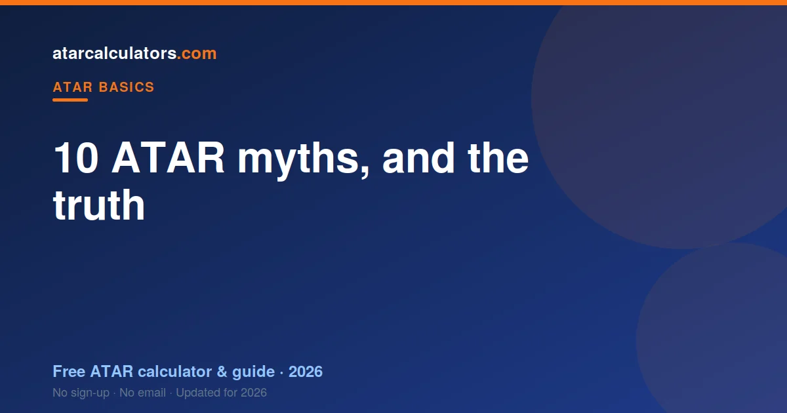

Many common beliefs about the ATAR are wrong. The ATAR is a rank, not a percentage. Hard subjects do not automatically scale up. Your school’s reputation does not change your ATAR. You cannot game scaling, and a low ATAR is not a fail. Knowing the truth helps you make smarter choices in Year 12.
Key takeaways
- The ATAR is a rank, not a percentage of questions you got right.
- Hard subjects do not automatically scale up — strong cohorts do.
- Your school’s reputation does not change your ATAR.
- You cannot game scaling — a strong result always beats a weak one.
- A low ATAR is not a fail, and many pathways exist.
- The ATAR measures a rank at one point in time, not how smart you are.

Myth 1: The ATAR is a percentage
This is the big one. An ATAR of 80 does not mean you scored 80%. It means you finished ahead of about 80% of your age group. The ATAR is a rank, a position in a line, not a mark.
Why it matters: students who think it is a percentage misjudge everything else, from what counts as “good” to how scaling works. Get this one right and the rest follows.
What the number actually describes
The ATAR is a percentile rank on a scale from 0.00 to 99.95, rising in steps of 0.05. It answers one question: compared with everyone your age in your state, where did your Year 12 results place you? UAC, which calculates the ATAR in NSW and the ACT, describes it as your position compared with all students in your age group, not just the students who finished Year 12 with you. That is why an ATAR of 80.00 means you are in roughly the top 20 per cent of your age group.
A percentage mark answers a completely different question: how much of a test did you get right? A student who scored 80 per cent on every exam might end up with an ATAR well above 80 or well below it, depending on the subjects, how everyone else performed and how the subjects scaled. The two numbers simply measure different things.
Why the confusion is so common
Part of the problem is that the ATAR looks like a mark. It sits on a scale that tops out just below 100, it is reported with two decimal places, and it arrives at the same time as your subject marks. Students have been receiving marks out of 100 since primary school, so the brain naturally reads any number near 100 as a percentage.
The ATAR’s design also hides its comparison group. When you see “ATAR 85”, nothing on the screen tells you that the 85 refers to your position among thousands of other people. A mark is about you; a rank is about you relative to others. That difference is invisible unless someone explains it.
What real HSC data shows
UAC’s guidance for NSW students makes the difference concrete. Most HSC courses have a median mark above 75, but the median ATAR is usually around 70. UAC also explains that, depending on what you study, marks around 70 could lead to an ATAR in the 50s, while marks closer to 80 could lead to an ATAR around 80. The reason is that most students achieve marks in a fairly narrow band, so small differences in marks spread out into large differences in rank.
In other words, a student who averages 72 in the HSC has not “got a 72”. They have probably landed in the middle of a very crowded part of the distribution, where many students have similar marks, and their ATAR could be some way below 72.
Why the median ATAR is not 50
If the ATAR were a simple rank of Year 12 students, the middle student would receive 50. Instead, the median ATAR among students who actually receive one is around 70. In 2025, UAC reported a median ATAR of 70.75 for NSW students. The reason is the comparison group: the ATAR ranks you against your whole age group, including people who left school early or did not seek an ATAR. Because those people sit in the comparison group but do not receive ATARs, the students who do receive one are spread across the upper part of the scale.
How to think about your ATAR instead
The most accurate way to read an ATAR is as a position in a line. An ATAR of 75 means that, if everyone your age lined up by Year 12 results, about 75 per cent of them would be behind you. Phrased that way, numbers that feel disappointing as “marks” often look much more reasonable as positions. A 65 is not a near-fail; it is a position ahead of about two-thirds of your age group.
This framing also explains why the ATAR cannot be compared directly with marks from other systems, such as a university grade point average or an overseas exam score. Each measures something different. Our guides to what an ATAR is and ATAR vs GPA go further into these differences.
A worked illustration
Imagine two NSW students, Lina and Sam. Lina’s HSC marks average 81 across her courses; Sam’s average 73. If the ATAR were a percentage, Lina would expect about 81 and Sam about 73. In practice, because most HSC students cluster in the 70s and the ranking spreads that cluster out, Sam’s ATAR could be in the 50s or 60s while Lina’s could be around 80 or higher, depending on their courses and how those courses scaled. The eight-mark gap in averages can become a twenty-point gap in ATARs. This is exactly the pattern UAC describes in its guidance on HSC marks and the ATAR.
What to do with this knowledge
When you set a target, set it as a rank, not a mark. Instead of “I want 85 per cent”, think “I want to be in the top 15 per cent of my age group”, and then look at what kind of results that usually requires in your state. Our ATAR target calculator works backwards from a target ATAR to the aggregate and approximate marks you would need, which turns a rank into something you can plan around.
Myth 2: Hard subjects always scale up
Not true. A subject scales up because the students taking it are strong across all their subjects, not because the content is difficult. A hard subject with a mixed cohort can scale modestly.
Why it matters: students pick brutal subjects they struggle in, chasing a scaling boost that never comes. A strong result in a subject you are good at almost always beats a weak result in a “high-scaling” one. See how scaling really works.
What scaling actually measures
Every state scales Year 12 results before combining them into an ATAR, and every state’s method has the same basic goal: to make a result in one subject comparable with a result in another. The key input is not how hard the subject’s content is. It is how strong the students in that subject are, measured by how well they perform across all of their other subjects.
VTAC puts this plainly in its guidance for Victorian students: scaling adjusts each study to account for how strong the students were and how difficult it was to achieve the middle score of 30 in that study. A subject full of students who perform well everywhere is a harder field to compete in, so a given result in that subject is worth more after scaling. A subject with a broader mix of students is an easier field to compete in, so the same result is worth a little less.
Why difficulty and scaling are different things
A subject can feel very hard and still scale modestly. Imagine a subject with demanding content that attracts a wide range of students, some of whom take it because it is required for a particular course rather than because they are strong all-rounders. The content is difficult, but the competition is not especially strong, so the subject’s scaling may be unremarkable.
Equally, a subject can feel quite approachable and scale well if it happens to attract students who perform strongly everywhere. Scaling responds to the people in the room, not to the reputation of the syllabus.
Scaling changes from year to year
Because scaling depends on that year’s students, it moves. A subject that scaled well last year may scale a little less this year if its cohort changes. That is why every admissions centre publishes its scaling results annually, and why historical tables are a guide rather than a promise. SATAC, the South Australian admissions centre, goes further: it does not publish scaled scores for individual subjects and warns that choosing subjects based on historical scaled scores could result in a lower university aggregate and ATAR.
Scaling depends on where you sit within a subject
Scaling also works differently at different points in a subject’s range. VTAC notes, for example, that the adjustment made by scaling varies for each study score and changes as the score moves away from the average. A subject might lift results noticeably in the middle of its range but add much less at the very top, where scores are already close to the maximum. Queensland’s 2025 data, as summarised from QTAC’s ATAR report, showed that no QCE subject scaled up at every reported point in its range.
What this means for subject choice
The practical lesson is simple. A strong result in a subject that scales modestly almost always contributes more to your ATAR than a weak result in a subject that scales well. Scaling rewards your rank within a strong group; it does not reward membership of the group. If you would be near the bottom of a “high-scaling” subject, scaling will not rescue your result. See our guides to ATAR scaling explained and scaling myths for worked examples.
A worked illustration
Consider a student, Ravi, who loves biology and is consistently near the top of his biology class, and who is also considering a high-level physics course he finds very hard. In biology, he expects to finish in the top 10 per cent of the state cohort. In physics, he expects to finish around the middle of a strong cohort. Even if physics scales more strongly than biology, a top-10-per-cent result in biology is likely to give him a better scaled result than a middle result in physics, and it will cost him less stress and time. If he needs physics as a prerequisite for a particular course, that is a different question. But if his only reason is scaling, the evidence points towards biology.
Questions to ask about any “high-scaling” subject
- Am I likely to finish in the top half of this subject’s cohort?
- Do I enjoy it enough to work at it consistently for two years?
- Is it a prerequisite or useful preparation for a course I want?
- Will it take time away from other subjects that count?
If the honest answer to the first two is no, scaling is unlikely to help you.
Myth 3: Your school’s reputation changes your ATAR
It does not. Your ATAR is worked out at the state level, against every student, using the same rules for everyone. A strong student at a small school is treated exactly like a strong student at a famous one.
What your school affects is teaching and support, which can help you perform. But no school gets a bonus baked into its students’ ranks. The rank is yours, not your school’s.
Where the myth comes from
This myth usually comes from league tables. Every December, schools publish impressive statistics and newspapers rank schools by results. It is easy to conclude that students at highly ranked schools get a boost simply by being there. In reality, the statistics reflect the students’ results, which are calculated using exactly the same rules as everyone else’s.
How results are actually combined
Your ATAR is calculated from your own final results in each subject, after statewide scaling, using your state’s aggregate rules. The admissions centre does not know or care which school has the best reputation. Two students with identical final results in identical subjects receive identical ATARs, wherever they studied.
Where the school’s results do matter: moderation
There is one genuine way your school’s cohort affects your results, and it is worth understanding so you do not mistake it for a reputation effect. In several states, school-based assessment marks are moderated: adjusted so that marks from different schools are comparable. Moderation often uses the school group’s performance in external exams as a reference point. If your school’s students do well in the exam, the school’s assessment marks are positioned accordingly; if they do less well, the marks are positioned lower.
Moderation does not reward reputation. It responds to how your school group actually performed, and it keeps the order of students within your school group as set by your teachers. A strong student at a school with a modest exam performance still benefits from being at the top of their group, and their own exam result counts directly.
What schools really change
Schools influence results through teaching quality, resources, expectations, peer culture and support. Those things can help students perform better, and that shows up in published statistics. But the effect works through students’ actual results. No school receives a bonus applied to its students’ ranks.
Why this matters for you
Students at less well-known schools sometimes feel their efforts count for less. They do not. A strong result is a strong result, wherever it is earned. Equally, students at highly ranked schools should not assume their ATAR will be carried by the school’s reputation. In both cases, your ATAR depends on your results.
What school data can and cannot tell you
Published school statistics, such as a school’s median ATAR or the share of students above 90, describe the group of students who attended that school in a particular year. They are shaped by who enrols, how many students seek an ATAR, and the subjects students choose. They are not a measure of how the system treats each student, and they cannot tell you what your own ATAR will be.
Some education communities debate whether school results should be published at all. In the ACT, for example, schoolwide median ATARs used to be public, and their publication has been the subject of discussion about whether such a narrow metric gives a fair picture of a school. Whatever your view, the key point for you is that your ATAR is calculated from your results, not your school’s statistics.
Myth 4: The ATAR is the only way into university
Far from it. The ATAR is the main path straight from Year 12, but universities run many others: diplomas that lead into degrees, TAFE pathways, enabling and foundation programs, portfolios, auditions and special entry schemes.
Why it matters: students who fixate on the ATAR miss backup routes that lead to the same degree. If your rank falls short, a pathway often still gets you there.
How many students actually use the ATAR
The ATAR is central for many Year 12 students, but it is not universal. A December 2025 report by the Mitchell Institute at Victoria University found that, on average across Australia, about 64 per cent of Year 12 students receive an ATAR, with large differences between states. UAC reported that around 70 per cent of NSW students who received an ATAR in 2025 intended to use it to enter university. So for a substantial share of students, the ATAR is either not part of their plans or not the main route.
The other routes into university
Universities admit students through many pathways besides the ATAR:
- Early offer schemes that use school recommendations, Year 11 results or other criteria before final results.
- Diplomas and associate degrees that lead into the second year of a related bachelor degree.
- Enabling and foundation programs designed to prepare students for university study.
- Vocational qualifications, such as a Certificate IV or Diploma, which can be converted into a selection rank.
- Portfolios, auditions and interviews for creative and performing arts and some other courses.
- Prior university study, where a few successful units can support entry to a different degree.
- Admissions tests, such as the Special Tertiary Admissions Test, for applicants without recent Year 12 results.
Why the pathways have grown
The Mitchell Institute’s report points out that the ATAR mattered most when undergraduate places were capped, and that over the past 20 years the number of places and the variety of pathways have both grown. Universities now actively design routes for students who did not receive an ATAR or whose ATAR fell short, because those students often succeed once they are given the chance.
What this means for planning
None of this makes the ATAR unimportant. For many school leavers it remains the simplest and fastest route into a degree. But it is worth knowing the alternatives before results day, so a disappointing number is a change of route rather than a dead end. Our guides to what counts as a good ATAR and selection rank vs ATAR explain how the ATAR fits into the wider admissions picture.
When the ATAR is not the right route
For some students, focusing on the ATAR is not the best use of their final years at all. Students who are certain they want a trade, or who plan to work and study part-time, may be better served by vocational programs. In Victoria, for example, the VCE Vocational Major offers a vocational pathway within the VCE, and students who take it do not receive an ATAR. In Queensland, students can combine General subjects with VET in ways that keep ATAR eligibility open. Choosing a non-ATAR pathway is a legitimate decision, not a failure.
A practical checklist
- List the courses you are interested in and the main entry pathways into each.
- Note which pathways need an ATAR, which accept other qualifications, and which have additional criteria.
- Identify at least one route into your preferred course that does not depend on your ATAR alone.
Myth 5: You can game scaling
You cannot. Scaling rewards your position within a subject’s cohort, not the subject you chose. Picking a “high-scaling” subject you are weak in just puts you low in a strong group, which gains you nothing.
The only real strategy is to do well in whatever you take. Scaling is designed to be fair, so there is no shortcut around simply performing.
Why scaling cannot be gamed
Every scaling method in Australia is built on the same principle: your scaled result depends on your position within a subject and on the strength of that subject’s cohort. You can choose the cohort, but you cannot choose your position in it. If you join a strong cohort and finish near the bottom, your scaled result will reflect that. If you join a broader cohort and finish near the top, your scaled result will reflect that too.
VTAC’s guidance makes the fairness principle explicit: scaling exists so that students are neither advantaged nor disadvantaged by the studies they choose. If a particular combination of subjects reliably produced higher ATARs for the same underlying ability, the scaling would be failing at its central job.
The strategies that do not work
- Picking only “high-scaling” subjects. If you are not strong in them, your raw results fall and scaling cannot make up the difference.
- Avoiding “low-scaling” subjects you are good at. A strong result in a modestly scaling subject usually contributes more than a mediocre result elsewhere.
- Predicting next year’s scaling from last year’s. Scaling changes with each cohort, so last year’s table is only a rough guide.
- Taking extra subjects purely to “average up”. Most states use only your best results, so an extra subject only helps if it becomes one of them.
What does work
The strategies that genuinely help are unglamorous: choose subjects you can do well in and sustain for two years, meet any prerequisites for courses you want, understand your state’s aggregate rules, and work consistently across the year. Our guides to the highest scaling subjects and whether hard subjects lead to a higher ATAR explain how to read scaling data without being misled by it.
Myth 6: Dropping a subject always helps your ATAR
Usually it does not. Your ATAR uses your best results, so a weak subject often counts for little or nothing already. Dropping it rarely lifts your rank, and it can leave you with no safety net.
Keeping an extra subject you can do reasonably well in protects you: if one subject goes badly, your best results still carry your ATAR. Think twice before dropping.
When dropping a subject makes sense
There are situations where dropping a subject is sensible: if it is consuming so much time that your other results are suffering, if it is not needed for any course you are considering, and if you will still meet your state’s minimum requirements without it. In those cases, the time you free up can lift your other results, which do count.
When dropping a subject is risky
Dropping becomes risky when it leaves you with no spare. In NSW, the ATAR uses your best 10 units, including 2 units of English. If you only study 10 units, every unit counts, including your weakest. In Victoria, your aggregate uses your English study plus your best three others, plus 10 per cent of your fifth and sixth; with only four studies, you lose the increments. In Queensland, the ATAR needs five eligible subjects, and in South Australia your university aggregate needs 90 credits. Dropping below these thresholds can remove your ATAR eligibility altogether.
Check the rules for your state
Each state also has rules about which subjects can count together, such as limits on certain categories of courses or on how many mathematics subjects count in full. Before dropping anything, check how your aggregate is built under your state’s rules. Our guide to how the ATAR is calculated sets out each state’s method.
An example of a risky drop
Mei is a Victorian student studying five VCE studies. She finds one study stressful and considers dropping it in Term 2 of Year 12. If she drops it, she will have exactly four studies, including English. Her ATAR will then depend entirely on those four, with no increments and no spare. If one of the four goes badly in the exams, there is nothing to replace it. If she keeps the fifth study and it turns out to be her weakest, it simply contributes a small increment. If it turns out better than expected, it may move into her primary four. Keeping it costs her time; dropping it removes her insurance. The right choice depends on how much time it is genuinely costing her, but she should make the decision knowing both sides.
Myth 7: You need to top the state for a high ATAR
No. You do not need to top any subject to get a high ATAR. Consistent, strong results across a few subjects produce a high rank, because your best scaled scores are combined.
Plenty of students reach the 90s without ever coming first in a class. Steady strength beats a single spike almost every time.
How rare the very top really is
The very top ATAR is genuinely rare. In 2025, UAC reported that 53 NSW students received the top ATAR of 99.95, VTAC reported 42 in Victoria, and the Queensland Government reported 37 in Queensland. But a high ATAR is far more common than coming first in the state. UAC also reported that 17.3 per cent of NSW students who received an ATAR in 2025 had an ATAR of 90 or above.
Why consistency beats a single spike
Your ATAR comes from an aggregate of several scaled results. A student who is very strong in four or five subjects, without topping any of them, will usually have a higher aggregate than a student who is outstanding in one subject and average in the rest. The arithmetic rewards breadth: each subject counts, and a weakness in one counted subject pulls the total down more than a spike in another lifts it.
Setting realistic goals
For most students, a better goal than “top the state” is “be consistently strong across the subjects that count”. That might mean aiming to move from the middle of your class to the upper third in each subject, rather than chasing first place in one. Our guide to target ATAR strategy explains how to set goals around your aggregate.
What the numbers say about the top end
UAC’s 2025 data gives a sense of how the top of the scale is spread. In NSW, 17.3 per cent of students who received an ATAR had an ATAR of 90 or above, 34.6 per cent had 80 or above, and 51.3 per cent had 70 or above. Each of the highest bands, from 99.95 down through 99.75, held around 50 students. So while the very top band is tiny, the 90s as a whole include thousands of students, most of whom did not top any subject in the state.
Why steady strength works
The ATAR rewards a strong aggregate, and an aggregate rewards breadth. In NSW, ten units count; in Victoria, four studies count in full plus two increments; in Queensland, five subjects count; in Western Australia, four scaled scores plus any bonuses. In every case, a student who is strong across all counted subjects is better placed than a student who is exceptional in one and ordinary in the others.
Myth 8: A low ATAR means you failed Year 12
It does not. Your ATAR and your Year 12 certificate are separate things. You can complete Year 12 successfully and still receive a low ATAR, because the ATAR is only a rank for university entry.
A low ATAR simply means a lower position in the rank that year. It is not a fail, and it does not close off further study, thanks to the many pathways available.
Your certificate and your ATAR are separate
Every state separates its senior certificate from the ATAR. The HSC, VCE, QCE, SACE, WACE, TCE and the ACT Senior Secondary Certificate are awarded by curriculum authorities when you meet their requirements. The ATAR is calculated separately by admissions centres, only for students who meet the ATAR eligibility rules, and only for the purpose of university selection.
The numbers show how separate the two are. In 2025, UAC reported that 77,693 NSW students completed at least one ATAR course, 68,896 were awarded the HSC and 60,432 received an ATAR. Thousands of students completed Year 12 successfully without receiving an ATAR at all.
There is no “pass mark” for the ATAR
Because the ATAR is a rank, it cannot be passed or failed. A rank of 40 means you placed ahead of about 40 per cent of your age group. It is a lower position than 80, but it is not a failure; it is a position. Courses set their own thresholds, and pathways exist for every part of the range. In Queensland, ATARs at or below 30 are reported as “30.00 or less”, but even that is a reported position, not a fail grade.
What to do if your ATAR is low
If your ATAR is lower than you hoped, focus on your options rather than the number. Check whether adjustment factors lift your selection rank for particular courses, look for pathway programs into the course you want, and talk to universities’ future student teams. Our guide to the 2026 ATAR release dates includes a full section on what to do if your ATAR is not what you hoped.
Myth 9: The ATAR measures how smart you are
It does not. The ATAR measures where your Year 12 results ranked at one point in time, in a specific set of subjects. It says nothing about your creativity, your character, or your potential.
Plenty of successful people had modest ATARs, and plenty changed direction entirely after school. The number is useful for admissions and narrow beyond that.
What the ATAR leaves out
The ATAR is built from a narrow slice of your life: your results in a handful of subjects, assessed over about two years, ranked against your age group in one state. It does not measure creativity, practical skill, teamwork, leadership, resilience, kindness, or the ability to learn things you have not studied yet. It does not measure growth after school either.
Why the ATAR still has a use
None of this means the ATAR is meaningless. It does a specific job well: it gives universities a consistent way to compare large numbers of school leavers who studied different subjects at different schools. That is useful for selection. It is just not a measure of a person.
A healthier way to see it
A helpful way to keep perspective is to remember what the ATAR would say about someone who was unwell during exams, who had family responsibilities, who chose subjects they loved over subjects that scaled well, or who simply peaked later. In each case the ATAR records a rank in one year. It cannot record why, and it cannot predict what comes next.
Why the ATAR feels bigger than it is
In Year 12, the ATAR is everywhere: in conversations, in school communications, in the media and on social media. That visibility makes it feel like a verdict. But its actual job is narrow: helping universities select school leavers. Remembering that job, and how quickly other measures take over after school, can make the number feel more proportionate.
Myth 10: Your ATAR follows you for life
It does not. Your ATAR opens the door to your first course, and after that it stops mattering. Employers do not ask for it. Once you are at university, your own marks take over.
Why it matters: the pressure feels enormous in Year 12, but the ATAR’s job is narrow and short-lived. It is a key for one door, not a label for your life.
When the ATAR still matters later
There are a few situations where your ATAR remains relevant after you start university. Some scholarships use it, especially in first year. If you want to transfer to a different course early in your degree, your ATAR may be considered alongside your university results. And if you leave and later return to study, your Year 12 results remain on record and do not expire. But in almost every case, your university results quickly become more important than your ATAR.
What replaces it
Once you are studying, your grade point average or weighted average mark becomes the number that matters for transfers, honours, postgraduate study and some graduate jobs. Our guides to ATAR vs GPA and whether your GPA matters after graduation explain the next stage.
An honest summary
Your ATAR matters most in the months after Year 12, when it is used for first entry to university. It can matter a little longer for scholarships or early course transfers. After that, it fades quickly, replaced by your university results, your experience and your skills. If you are worried about your ATAR defining you, remember that very few adults are ever asked about it again.
See your real ATAR estimate
The best cure for ATAR myths is real numbers. Our ATAR calculators use the latest official scaling to estimate your ATAR from your actual marks, so you can replace rumours with a figure.
Seeing how your subjects really scale, and how your best results combine, makes the whole system far less mysterious. Try it with a few subject combinations.
Myth 11: Only the final exam counts
In most states, it does not. A large part of your result comes from assessments across the year, not just the final exam. In some subjects the internal work is the majority of your mark.
Why it matters: students who coast all year, planning to “cram for the exam”, throw away marks they have already been offered. Every assessment through the year is a chance to build your result, so treat them all as if they count.
How much school assessment counts
The balance between school assessment and exams varies by state and subject. In Queensland, the external assessment contributes 25 per cent of the final result in most General subjects and 50 per cent in mathematics and science subjects, so school-based assessment makes up the rest. In NSW, HSC marks combine school assessment and the HSC exam. Victoria combines school-assessed coursework or tasks with external exams in each VCE study. In South Australia, school assessment typically makes up the larger share of each subject. Every state includes school-based work.
Why consistency across the year matters
School assessments do more than add marks. In many systems they also set your rank within your school group, which then interacts with moderation and exam results. A student who coasts through school assessments may find their rank in the school group set lower than their exam performance would suggest. Treating every assessment as if it counts, because it does, is one of the most reliable ways to protect your ATAR.
How assessment works in each state, briefly
- NSW: HSC marks combine school assessment and the HSC exam.
- Victoria: study scores combine school-assessed coursework or tasks with external exams.
- Queensland: General subjects combine three internal assessments with one external assessment, worth 25 per cent in most subjects and 50 per cent in mathematics and science.
- South Australia and the NT: SACE subjects combine school assessment, typically the larger share, with external assessment.
- Western Australia: ATAR course results combine moderated school marks with WACE exam marks.
- Tasmania: TASC courses include internal and external assessment.
- ACT: results are school-based, with the ACT Scaling Test used in scaling.
In every system, school assessment through the year contributes meaningfully to your final result.
Myth 12: You should pick subjects purely for scaling
You should not. Scaling only rewards how you rank within a subject, so a subject that scales well does nothing for you if you score poorly in it. Interest and ability matter far more than the scaling table.
Why it matters: students choose subjects they dislike and struggle in, chasing scaling, and end up with weaker results than if they had followed their strengths. Pick subjects you can do well in and stay motivated for — that is what lifts your rank.
What to do instead of choosing for scaling
Good subject choice weighs several factors: your interest and ability, your results so far, prerequisites for courses you might want, the workload of the combination, and how the subjects fit your state’s aggregate rules. Scaling is a minor consideration within that list. If two subjects are otherwise equal for you, scaling might tip the balance; it should not override a clear difference in how well you are likely to do.
What the admissions centres say
The admissions centres themselves consistently advise against choosing subjects for scaling. SATAC states that choosing subjects based on historical scaled scores is not recommended and is likely to result in a worse university aggregate and ATAR, and recommends choosing subjects based on your skills, interests, abilities and goals. That advice from the organisation that does the scaling is worth taking seriously.
A balanced way to think about scaling
Scaling is a fairness mechanism, not a strategy. It exists so that you can choose subjects based on your interests and strengths without being penalised for that choice. If you trust the mechanism to do its job, you are free to make subject decisions for the right reasons. That is the most useful thing to take from all twelve of the big myths above.
More myths about scaling and subjects
The twelve myths above are the ones students mention most often. But there are many more, and some of the most damaging are about scaling and subject choice. Here are the next set, with the facts behind each.
Myth 13: A subject that scaled well last year will scale well this year
Scaling is recalculated every year from that year’s students. If a subject’s cohort is a little less strong one year, its scaling moves down; if the cohort is stronger, it moves up. The direction is often similar from year to year, because the kinds of students attracted to a subject tend to be similar, but the size of the effect changes.
This matters most for students who choose subjects in Year 10 or 11 based on a scaling table from two years earlier. By the time they sit their final exams, the scaling may look different. Treat any scaling table as a rough indication of a subject’s usual position, not as a prediction for your year. Our guide to how scaling changes from year to year shows how much movement is typical.
There is also a feedback effect. If many students rush into a subject because it scaled well, the cohort becomes broader, which can reduce the subject’s scaling. A strategy that works for a few students can stop working if everyone follows it.
What to do instead. Look at several years of scaling for a subject, not one. If a subject has sat in a similar position for several years, that tells you something about the kind of cohort it usually attracts. If its position jumps around, treat any single year’s figure with caution. Most importantly, weigh scaling far below your own likely performance in the subject. A subject’s long-run tendency matters much less than where you are likely to finish within it.
An example. A Victorian student in Year 10 sees that a particular language scaled strongly in the latest VTAC report and plans to take it purely for that reason. Two years later, the language still receives the policy adjustment VTAC applies to languages, but the student’s own study score is modest because they found it hard to stay motivated. A study they enjoyed more might well have produced a stronger scaled result.
Myth 14: Languages and maths add bonus points to your ATAR everywhere
This myth mixes up three different things that happen in different states.
In Western Australia, bonuses really are part of the ATAR calculation. TISC’s Tertiary Entrance Aggregate is the sum of your best four scaled scores plus 10 per cent of your best Language other than English scaled score, 10 per cent of your Mathematics Methods scaled score and 10 per cent of your Mathematics Specialist scaled score. These bonuses apply even if those courses are not among your best four, and they make the maximum aggregate 430 rather than 400.
In Victoria, languages receive a scaling adjustment. VTAC explains that, as a result of government policy to encourage language study, each language is adjusted up by adding five to its initial scaled study score average. VTAC is careful to point out that this does not mean five points are added to your ATAR; it is an adjustment within scaling.
Elsewhere, “bonus points” for languages or maths are usually adjustment factors that universities add to your selection rank for particular courses. They do not change your ATAR at all.
So the accurate answer depends on your state. Our guide to subject bonus points explains the selection-rank schemes, and how the ATAR is calculated in WA explains the TEA bonuses.
Why it matters. The word “bonus” causes real confusion. Students in NSW or Queensland sometimes assume a language will add points to their ATAR, when in their state any language bonus is usually an adjustment factor for particular courses. Students in Western Australia sometimes do not realise their bonuses are already built into their TEA. Knowing which applies in your state lets you weigh a language or advanced maths course properly.
What to do instead. Check the rules for your state and for the universities you are interested in. If a subject attracts a bonus, find out whether it is in the ATAR calculation itself, as in WA, a scaling adjustment, as in Victoria for languages, or an adjustment factor to the selection rank for particular courses, as in most other cases.
Myth 15: Taking the hardest maths guarantees a high ATAR
The highest-level mathematics courses often scale well because they attract strong students. But scaling rewards your rank within that strong group. A student who finds the course very difficult and finishes near the bottom of it can end up with a scaled result lower than they would have achieved in a mathematics course better suited to them.
There are good reasons to take advanced mathematics: genuine interest, aptitude, and preparation for courses such as engineering, physics or actuarial studies. In some states and courses there are also prerequisites or adjustment factors. But “it scales well” is not, on its own, a good reason. Ask instead whether you are likely to do well in it relative to the other students taking it.
Why it matters. Advanced mathematics is often treated as a badge of seriousness, and students feel pressure to take it. For students who enjoy it and do well, it can be an excellent choice. For students who struggle, it can consume hours that would produce better results elsewhere, without the scaling benefit they were promised.
What to do instead. Use your Year 10 and Year 11 mathematics results, and your teachers’ advice, to judge where you are likely to sit in the cohort. If you are genuinely strong, advanced mathematics is worth considering on its merits. If you are not, a mathematics course where you can perform well is usually the better choice for your ATAR, and many university courses accept it.
Myth 16: English does not matter because everyone takes it
English matters a great deal, precisely because it is compulsory in most states’ ATAR calculations. In NSW, your ATAR must include 2 units of English, even if they are your lowest units. In Victoria, your primary four must include one study from the English group. In Queensland, you must achieve a C or better in an English subject to be eligible for an ATAR at all.
That means a weak English result cannot simply be discarded in NSW or Victoria the way a weak elective can. It counts in full. Students who neglect English to focus on subjects they enjoy more can find it drags down an otherwise strong aggregate. Our maths vs English scaling guide explores how English results interact with the rest of the aggregate.
Why it matters. Because English is compulsory in the NSW and Victorian calculations, a weak English result has a direct cost. In NSW, your 2 units of English replace what might otherwise have been two of your best units. In Victoria, your English study occupies one of the four places in your primary four. In Queensland, failing to achieve a C in an English subject removes your ATAR eligibility entirely.
What to do instead. Treat English as one of your most important subjects, not a background requirement. Work on essay structure, close reading and timed writing throughout the year. If you have a choice of English courses, choose the one where you are likely to rank highest, considering both your ability and the course’s usual scaling.
Myth 17: Taking extra subjects lowers your ATAR
In most states, your ATAR is built from your best results according to set rules, so an extra subject that turns out weaker than the rest simply does not count. In NSW, UAC uses your best 2 units of English and your best 8 other units. In Victoria, only the highest six permissible results can contribute. In Queensland, QTAC uses your best five eligible results. In Tasmania, the TE Score uses your best Level 3 and 4 results over two years.
The real cost of an extra subject is time. If it takes so much effort that your other results suffer, it can hurt indirectly. But the extra subject does not reduce your aggregate by being there. For many students, an extra subject is a useful insurance policy against one result going badly.
Why it matters. Students who believe extra subjects hurt them sometimes drop subjects they enjoy and do well in, leaving themselves exposed if another subject goes badly. Others avoid accelerated or extension courses for the same reason.
What to do instead. Ask a simpler question: will this subject take so much time that my other results suffer? If not, keeping it is usually harmless and often helpful. Check your state’s specific rules about which results can count together, because some states limit how many results from particular groups can contribute in full.
Myth 18: Scaling only ever moves results up
Scaling moves some results up and some down. In a subject with a strong cohort, results are generally positioned higher after scaling; in a subject with a broader cohort, they are generally positioned lower. That is the whole point: to make results comparable across subjects.
Within a single subject, the effect can also differ along the range. A subject might lift results in the middle of its range and add little at the top, or slightly reduce results at the bottom. When students hear that a subject “scales up”, they sometimes assume every result in it rises by the same amount. That is rarely the case.
Why it matters. Students who believe every subject is “scaled up” can be surprised when their scaled results come out lower than their raw marks. Understanding that scaling moves results in both directions makes official results easier to interpret.
An example. A student with raw marks in the low 80s across several subjects with broad cohorts may see scaled results somewhat below those raw marks. That does not mean they were penalised; it means their results were placed on a common scale with results from subjects whose cohorts were stronger. Their ATAR still reflects their position fairly.
Myth 19: Vocational subjects can never count towards an ATAR
In many states, vocational education and training (VET) can contribute to an ATAR under specific rules:
- Queensland: four General subjects plus one completed VET qualification at Certificate III or above is an eligible ATAR combination.
- Victoria: scored VCE VET programs can count as studies, and some unscored VET can contribute as an increment.
- South Australia and the NT: up to 20 credits of Recognised Studies, which can include VET, can count in the flexible option of the university aggregate. SATAC bases the scaled score for a completed VET qualification on the average of the first 70 credits of Tertiary Admissions Subjects in the aggregate.
- NSW: some VET courses with an HSC exam can count, within limits on the number of units from certain course categories.
The rules are specific, so check them with your school and admissions centre. But the blanket claim that VET “never counts” is wrong.
Why it matters. Students who are strong in vocational areas sometimes believe the ATAR is closed to them, and either abandon VET they enjoy or give up on university entirely. In many states, a well-chosen combination keeps both doors open.
What to do instead. Ask your school’s careers adviser how VET can contribute in your state, and check your admissions centre’s rules. In Queensland, a Certificate III or higher can be the fifth input to your ATAR. In South Australia and the NT, Recognised Studies, including VET, can contribute up to 20 credits. In Victoria, scored VCE VET programs can count as studies.
Myth 20: You can work out your exact ATAR in advance from published scaling
Published scaling data describes the previous year’s students. Your year’s scaling will be calculated from your year’s students, after your results are finalised. Some information is not published at all: SATAC, for example, does not make scaled scores for individual subjects publicly available.
The conversion from aggregate to ATAR also depends on your year’s distribution. VTAC publishes its aggregate-to-ATAR table on results release day, not before. So any advance calculation, however careful, is an estimate. That is the honest position of every good ATAR calculator, including ours; our guide to how accurate ATAR calculators are explains the sources of uncertainty.
Why it matters. Students who believe they can calculate their exact ATAR in advance often treat a calculator’s output as a promise, and are then shocked when the official number differs. Understanding that every advance calculation is an estimate makes those differences less alarming.
What to do instead. Use calculators to explore ranges and scenarios. Run a cautious, realistic and optimistic version of your results, and plan around the range. When the official result arrives, compare it with your range, not with a single point estimate.
Myth 21: Every student in a subject is scaled by the same amount
Scaling is not a single number added to everyone in a subject. It is a transformation that maps the subject’s results onto a common scale, and the effect differs at different points. VTAC notes that the adjustment for a study is different for each study score and changes as the score moves away from the average of 30.
In practice, this means a student near the top of a subject and a student in the middle can experience quite different scaling effects. When you read that a subject scales “by about five points”, that figure usually refers to a particular point in the range, often the middle, and may not apply to your result.
Why it matters. When students hear that a subject “adds five points”, they often apply that figure to their own result, which can make their estimates misleading in either direction. Understanding that scaling varies along the range helps you interpret published scaling data correctly.
What to do instead. When you look at scaling data, find the figure closest to your own expected result in that subject, not the headline figure for the median or the top. Most admissions centres publish scaling at several points in each subject’s range for exactly this reason. Our guide to reading a scaling report shows how.
More myths about results, ranks and admission
Once results arrive, a different set of myths takes over. These are about what the number means and how universities use it.
Myth 22: An ATAR of 99.95 means a perfect score
An ATAR of 99.95 does not mean a student got every question right or achieved the maximum possible aggregate. It means they were in the top band of the ranking, the top 0.05 per cent of their age group in their state. In 2025, UAC’s ATAR distribution table showed 53 NSW students in the 99.95 band, about 0.09 per cent of NSW students who received an ATAR.
NSW history illustrates the point. When the NSW rank was the UAI, its top value was 100, and UAC noted at the time of the change to the ATAR that no NSW student had ever received a perfect aggregate of 500 in 30 years. The top rank always went to the students with the highest aggregates in their year, whatever their exact totals. The same is true of the ATAR today.
Why it matters. Believing 99.95 is a perfect score can make students feel that anything less is a shortfall. In reality, an ATAR of 99.00 or 98.00 is an outstanding result that places a student in roughly the top one or two per cent of their age group.
A sense of scale. In NSW in 2025, about 50 students sat in each of the top few ATAR bands, from 99.95 down to 99.75. The top band holds only a few dozen students in each of the larger states: 53 in NSW, 42 in Victoria and 37 in Queensland in 2025, with smaller numbers elsewhere. Every one of those students had a strong aggregate, but none needed a perfect one.
Myth 23: An ATAR of 50 is average
Among students who actually receive an ATAR, the middle result is around 70, not 50. UAC says the average ATAR is usually around 70, and reported a median of 70.75 for NSW in 2025. In Victoria, the average ATAR for 2024 was reported at 69.52. In the ACT, the 2025 median was reported as 78.35.
The reason is the comparison group. The ATAR ranks you against your whole age group, including people who did not finish Year 12 or did not seek an ATAR. They are part of the group but do not receive ATARs, so the students who do receive one sit higher on the scale. An ATAR of 50 is a below-median result among ATAR recipients, but it still places you ahead of about half your age group.
Why it matters. A student who receives an ATAR of 65 and believes the average is 50 may think they did well above average, while a student who receives 55 and believes the same may think they are comfortably in the middle. Both are misreading their position among ATAR recipients. Knowing that the middle is around 70 lets you interpret your result accurately, and also recognise that a result in the 60s still places you well ahead of much of your age group.
An honest way to describe results. It is fair to say that around 70 is a typical ATAR for students who receive one, that around 80 places you in roughly the top third of ATAR recipients, and that 90 and above places you in roughly the top sixth in NSW, based on UAC’s 2025 figures. Those descriptions are more accurate than labelling 50 as average.
Myth 24: Bonus points are added to your ATAR
In most cases, bonus points, now usually called adjustment factors, do not change your ATAR. They are added to your ATAR for particular courses to give your selection rank for those courses. CourseSeeker, the national course information site, states this directly: adjustments do not change an individual’s ATAR; they change the selection rank for a particular course or courses.
This matters because your ATAR is the same everywhere, while your selection rank can differ from course to course. A regional student might have a selection rank five points above their ATAR for one university and unchanged for another. The exception, as noted above, is Western Australia, where language and mathematics bonuses are built into the Tertiary Entrance Aggregate itself. Our guides to selection rank vs ATAR and ATAR bonus points explain how adjustments work.
Why it matters. If you think adjustments change your ATAR, you may misjudge where you stand for different courses. Your ATAR is fixed; your selection rank varies by course depending on which adjustments apply.
What to do instead. For each course on your list, work out your likely selection rank by adding the adjustments you are eligible for at that institution. Compare that figure with the course’s threshold. Some adjustments are automatic, while others require an application, so check deadlines well before results day. Our selection rank calculator can help.
Myth 25: A course’s cut-off is the minimum ATAR you need
Most published course thresholds are the lowest selection rank that received an offer in a previous round, not the lowest ATAR. Selection ranks include adjustment factors, so some students admitted to a course will have ATARs below the published figure. Thresholds also move each year with demand and the number of places.
Many universities now publish profiles showing the lowest, median and highest ATARs and selection ranks of students who received offers. Reading those profiles gives a much better picture than a single cut-off. And remember that some courses have additional criteria, such as prerequisites, interviews or portfolios, so meeting the rank alone is not always enough.
Why it matters. Students who treat a cut-off as a hard minimum sometimes remove courses from their list that they could have been offered, especially once adjustment factors are taken into account. Others assume they are safe because their ATAR is above last year’s figure, without checking prerequisites or other criteria.
What to do instead. Look for the fullest information each university publishes, such as ATAR and selection rank profiles showing lowest, median and highest ranks. Check every requirement for the course, not just the rank. And keep courses close to your selection rank on your list; thresholds move, and there is no penalty for aiming a little high.
Myth 26: If you miss the first offer round, you have missed out
Every admissions centre runs several offer rounds through December, January and February. Places become available as students accept other offers, decline places or change their plans. VTAC notes that if you do not receive an offer, you are still considered in future rounds, and if you receive one, you are still considered for higher preferences. Many students receive their offer in a later round.
The first round matters, and you should prepare for it carefully. But it is the start of the offer season, not the end. Our guide to the 2026 ATAR release dates lists every major round.
Why it matters. Students who believe the first round is the only one can make panicked decisions on results day, such as accepting a course they do not want or abandoning university plans altogether. Knowing that further rounds follow gives you time to make a considered choice.
What to do instead. Prepare carefully for the first ATAR-based round, then keep your preference list up to date for later rounds. Check your email and admissions centre account regularly until the final rounds in February, and respond promptly to any new offer.
Myth 27: Courses lower on your preference list are harder to get into
Your position on the preference list does not change your chance of being selected for a course. In each offer round, you receive an offer for the highest course on your list for which you are eligible. UAC addresses this misconception directly in its advice to applicants: many students believe a course further down their list is harder to get into, and that is not the case.
The practical consequence is important. Order your preferences by what you most want, not by what you think you are most likely to get. If you put a safe course first, you will be offered it even if you were eligible for something you wanted more.
Why it matters. This myth leads students to put safe options first, which can mean being offered a course they are less interested in when they were eligible for something better. It is one of the most costly misunderstandings in the whole admissions process.
What to do instead. Put your dream course at the top, even if it is a stretch. Fill the middle of your list with realistic options you would genuinely like, and keep at least one safe option at the bottom. That structure gives you the best chance of the highest course you can reach.
Myth 28: ATARs from different states cannot be compared
ATARs are calculated by each state from its own senior certificate, but they are designed and treated as equivalent. CourseSeeker states that ATARs are calculated in each state to reflect a student’s rank against other students in that state, and that all ATARs are treated as equivalent between the states, which makes applying interstate easier.
That does not mean the calculations are identical. NSW uses ten units of HSC courses, Victoria a primary four and increments, Queensland five subjects, Western Australia a TEA with bonuses, South Australia a 90-credit aggregate and Tasmania a TE Score. But the resulting ranks are aligned so that an 85 from one state means the same as an 85 from another for university selection. Our HSC vs other states guide compares the systems.
Why it matters. Students considering interstate study sometimes worry that their ATAR will be discounted elsewhere, or that they need to “convert” it. In fact, your ATAR is passed between admissions centres and used directly. The main interstate issue is timing, because ATARs are released on different days in different states.
What to do instead. If you are applying interstate, check when your ATAR will reach the other admissions centre and which offer round will be the first to include it. Our 2026 release dates guide explains how the dates interact.
Myth 29: Your ATAR compares you only with your Year 12 classmates
Your ATAR compares you with your whole age group in your state, not just the students in your year at school, and not just the students who completed Year 12. UAC describes the comparison group in NSW as all students in your age group. That is why an ATAR of 80.00 means the top 20 per cent of the age group rather than the top 20 per cent of Year 12 students.
This myth often causes unnecessary worry for students at high-achieving schools, who see themselves in the middle of their class and assume they will receive a middle ATAR. If their class is strong relative to the state, the middle of the class may be well above the middle of the state.
Why it matters. Students at strong schools can become discouraged when they are in the middle of their class, assuming they are heading for a middle ATAR. Students at schools with broader intakes can be overconfident about being near the top of their class. In both cases, the school is the wrong reference point.
What to do instead. Use statewide information, such as published scaling data and calculators based on it, to estimate where you sit in the state, rather than relying only on your class rank. Your teachers can also help you understand how your school’s cohort usually compares with the state.
Myth 30: An online ATAR calculator gives your exact ATAR
A good calculator gives a well-informed estimate based on the latest published scaling. It cannot give your exact ATAR, because the official ATAR depends on your year’s scaling and your year’s distribution of aggregates, which are only known after results are finalised. Calculators are excellent planning tools, and the best way to use them is to run a range of scenarios rather than relying on a single figure. See our guide to how accurate ATAR calculators are.
Why it matters. Treating an estimate as a promise can lead to poor preference decisions, such as removing safe options because a calculator suggested a high ATAR. It can also lead to unnecessary disappointment when the official number comes in a few points lower.
What to do instead. Treat every calculator output as the middle of a range. Make sure your preference list includes courses that work across that whole range. Our ATAR predictor accuracy guide explains why estimates and official results differ.
Myth 31: Beating the cut-off guarantees an offer
Meeting last year’s threshold does not guarantee an offer this year, because thresholds can rise. Some courses also have requirements beyond the rank, such as prerequisite subjects, interviews, portfolios, auditions or admissions tests. A student with a high ATAR who has not met a prerequisite will not be offered the course.
Some universities do offer guaranteed entry ranks for certain courses: if your selection rank meets the guaranteed figure and you satisfy any other requirements, you are assured of an offer when that course is your highest eligible preference. Where a guarantee exists, it is a genuine promise. Where it does not, a threshold is a guide.
Why it matters. Students who assume a high ATAR is enough sometimes miss prerequisites, interview registrations, portfolio deadlines or admissions test dates, and lose a place they could have had. Others assume a guaranteed entry rank applies when the course does not offer one.
What to do instead. For each course on your list, write down every requirement: rank, prerequisites, additional criteria and deadlines. Check whether the course offers a guaranteed entry rank. Review the list again before your change of preference deadline.
More myths about study, school and life after Year 12
The last group of myths is about how to prepare, and what the ATAR means once school is over.
Myth 32: Year 11 does not count, so it does not matter
Whether Year 11 results count towards your ATAR depends on your state. In Queensland, the ATAR is based on Units 3 and 4, which are studied in Year 12. In Tasmania, the TE Score combines your best Level 3 and 4 course scores over two years of senior secondary study, so Year 11 results can count. In NSW, the ATAR uses your best ten units regardless of the year each course was completed, so accelerated courses taken early can count.
Even where Year 11 results do not count directly, Year 11 matters. It builds the skills and knowledge Year 12 depends on, it is when many students settle their subject choices, and Year 11 results are used in some early offer schemes. In Western Australia, for example, early offers are typically based on a predicted ATAR using Year 11 results. Our guide to predicting your ATAR in Year 11 explains how to use Year 11 well.
Why it matters. Students who coast through Year 11 often start Year 12 with gaps in foundational knowledge, which makes the most important year harder than it needs to be. In states where Year 11 results count, such as Tasmania, or where early offers rely on Year 11 results, the cost is more direct.
What to do instead. Use Year 11 to build strong habits, test your subject choices and close any gaps. If a subject is clearly not working, Year 11 is usually a better time to change it than Year 12.
Myth 33: You can make up everything in Term 4
Final exams matter a lot, but school assessment through the year counts too, and in several states it sets your rank within your school group. A strong final exam can lift your result, but it rarely erases a year of weak assessment. Cramming also tends to produce shallow knowledge that is hard to apply to unfamiliar exam questions.
Students who perform best usually spread their effort: steady work through the year, regular revision, and practice with past papers well before Term 4. That approach is less dramatic than a last-minute surge, but much more reliable.
Why it matters. Students who plan to “turn it on” in Term 4 often find that school assessments earlier in the year have already shaped their results, and that there is too much content to learn well in a few weeks. The result is often stress and underperformance.
What to do instead. Build a simple weekly routine from the start of Year 12: regular review of each subject, practice questions, and feedback from teachers. Then use Term 4 for consolidation and exam practice rather than first-time learning.
Myth 34: More study hours always means a higher ATAR
How you study matters more than how long. Hours spent rereading notes or highlighting textbooks tend to produce less improvement than shorter sessions of active practice: answering past exam questions, explaining concepts aloud, testing yourself and reviewing mistakes. Beyond a certain point, extra hours also eat into sleep, exercise and rest, which affect concentration and memory.
A good test of a study session is to ask what you can now do that you could not do before it. If the answer is “nothing much”, the session was probably long but not effective.
Why it matters. Students who equate hours with progress can burn out, lose sleep and still not improve, because the type of study they are doing is not effective. Burnout in Term 3 can also undermine results in Term 4.
What to do instead. Prioritise active study methods, such as practice questions under timed conditions, self-testing and explaining ideas without notes. Protect sleep and exercise, which support memory and concentration. Measure study by what you can now do, not by the clock.
Myth 35: You need a tutor to get a high ATAR
Tutoring can help some students, particularly with targeted support in a subject they find difficult. But many students achieve high ATARs without tutoring, using the resources their school provides, past exam papers, study groups and their teachers’ feedback. The factors that matter most are consistent effort, good study habits and seeking help early when something does not make sense.
If you are considering tutoring, think about what specific problem it would solve. Help with a clear gap is more useful than general tutoring for its own sake.
Why it matters. Students who believe tutoring is essential can feel disadvantaged if their family cannot afford it, and may lose confidence. Families may also spend money on tutoring that does not address the real issue.
What to do instead. Start with free resources: teachers’ feedback, past papers, study groups and school support programs. If you do seek tutoring, use it for a specific need, such as a difficult topic in mathematics or essay structure in English, and judge it by whether that specific need improves.
Myth 36: Students at some kinds of school always get higher ATARs
Some schools have high average results, and those averages are published widely. But averages describe groups, not individuals. Every school has students across a wide range of ATARs, and a student’s ATAR depends on their own results, calculated under the same rules as everyone else’s. Myth 3 above explains how moderation works and why it responds to a school group’s actual performance rather than its reputation.
It is also worth remembering that school averages depend on who attends. Schools that select students on entry, or that have a high share of ATAR-eligible students, will naturally show different statistics from schools with broader intakes.
Why it matters. This myth can discourage students from working hard if they believe their school has already decided their outcome, or make others complacent if they believe their school will carry them. Neither belief is accurate.
What to do instead. Focus on your own results. Wherever you study, consistent work, good use of feedback and sensible subject choices are what move your ATAR.
Myth 37: A lower ATAR means you will struggle at university
The ATAR is a measure of Year 12 results relative to your age group. It is one indicator of readiness for university, but far from the only one. Motivation, interest in the course, study habits, support and life circumstances all affect how students do at university. Many students with modest ATARs do very well once they are studying something they care about, and pathway programs exist precisely because universities have seen this.
If your ATAR is lower than you hoped, the best preparation for university is to choose a course you are genuinely interested in, use the support services from the start, and treat first year as a fresh beginning.
Why it matters. Students with a modest ATAR sometimes avoid university because they assume they will not cope, even when a pathway or a supportive course would suit them well. Others accept a lower expectation of themselves that is not justified.
What to do instead. If you are interested in a course, look at pathway programs and support services, and give yourself the chance. Many universities offer academic skills support, peer mentoring and transition programs designed for students starting from a range of backgrounds.
Myth 38: The course you choose at 17 locks in your career
Plenty of students change course after first year, add a second degree, move into postgraduate study in a different field, or build a career that has little to do with their first degree. Universities allow internal transfers, and many degrees include flexible majors and electives. Your first course is a starting point, not a contract.
That does not mean preference choices are unimportant. It means you can make them with less fear. Choose the course that interests you most and that your ATAR, adjustments and pathways can reach, knowing you can adjust later.
Why it matters. Fear of making the “wrong” choice can freeze students during preference decisions, or push them towards courses chosen for prestige rather than interest.
What to do instead. Choose the course that interests you most and fits your likely selection rank, knowing that transfers, double degrees, majors and postgraduate study all allow you to change direction later.
Myth 39: Employers will ask for your ATAR
Employers generally care about your qualifications, experience and skills, not your Year 12 rank. Graduate employers who look at academic results usually focus on your university results. By the time you are applying for most jobs, your ATAR is several years in the past and has been replaced by more recent and more relevant evidence.
Why it matters. Students who believe their ATAR will follow them into the workforce feel unnecessary pressure in Year 12, and adults who did not receive an ATAR sometimes worry it will count against them. In practice, employers look at more recent and more relevant evidence.
Myth 40: Your ATAR expires after a few years
Your ATAR does not expire. Admissions centres can retrieve past results, and you can use an old ATAR to apply for university in later years. QTAC states that Year 12 results do not expire once you leave school, and the same principle applies in other states. What changes over time is how much weight a university gives an old result compared with more recent study, work or qualifications.
Why it matters. Adults returning to study sometimes assume their old Year 12 results are no longer valid and do not mention them, or assume they must repeat Year 12. Neither is usually necessary.
What to do instead. If you want to return to study, gather all your results, including your Year 12 results, any vocational qualifications and any university study, and ask the admissions centre how each can be used. Admissions centres often consider your best available rank, and old Year 12 results remain part of your record.
State-specific myths
Some myths are specific to one state, because they grow out of that state’s own rules. Here are the most common in each system.
NSW: “Your English mark only counts if it is one of your best”
In NSW, your ATAR is calculated from your best 2 units of English plus your best 8 units from your remaining courses. The 2 units of English count even if they are your lowest units. UAC’s own worked example shows a student whose English Standard result is their lowest, yet it is still included, while a higher-scoring elective is left out. So English always counts in NSW. Our guides to how the NSW ATAR is calculated and HSC scaling explain the rule in detail.
NSW: “A Band 6 in every course means a 99”
Band 6 describes a standard of achievement in a course, based on your HSC mark. Your ATAR depends on your scaled marks, which depend on the courses you took and how they scaled. A student with Band 6 results across courses that scale modestly may receive a lower ATAR than a student with slightly lower marks in courses that scale strongly. Strong bands usually go with a strong ATAR, but there is no fixed conversion.
Victoria: “A study score of 40 is 80 per cent”
A VCE study score is not a percentage. It is a score out of 50 showing your position within a study. The VCAA sets the mean study score at 30 for every study each year, and explains that a score of 38 or more puts you in roughly the top 15 per cent. A 40 is therefore a strong result relative to the study’s cohort, not “80 per cent of the course”. Our VCE scaling guide covers study scores in depth.
Victoria: “Your fifth and sixth subjects barely matter, so do not bother”
Your fifth and sixth studies each contribute 10 per cent of their scaled score as an increment. That is small compared with the primary four, but it is not nothing. More importantly, a fifth or sixth study is insurance: if one of your expected primary four studies goes badly, a fifth study can move into the primary four. Dropping to four studies removes both the increments and the insurance.
Queensland: “Your English result is always part of your ATAR”
In Queensland, you must achieve a C or better in an English subject to be eligible for an ATAR, but your English result is only included in the calculation if it is one of your best five eligible results. So English is a gatekeeper in Queensland, not an automatic inclusion. This is a genuine difference from NSW and Victoria. See our QCE scaling guide.
Queensland: “The QCS Test still affects your ATAR”
The Queensland Core Skills Test belonged to the old OP system and was last held in 2019. Queensland’s ATAR is calculated by QTAC using inter-subject scaling of QCE results, and General subjects now include external assessment set by the QCAA. If an older relative mentions the QCS Test, they are describing a system that no longer exists. Our guide to ATAR vs OP vs ENTER explains the change.
Western Australia: “Bonuses only count if the bonus subject is in your best four”
In Western Australia, the 10 per cent bonuses for your best Language other than English, Mathematics Methods and Mathematics Specialist are added to your Tertiary Entrance Aggregate even if those courses are not among your best four scaled scores. TISC’s own examples show a student receiving a mathematics bonus even though Mathematics Methods was not one of their top four. See our guide to how the WA ATAR is calculated.
South Australia: “Scaled scores are published, so you can choose the best-scaling subjects”
SATAC does not publish scaled scores for individual subjects, and it explicitly advises against choosing subjects based on historical scaled scores, warning that doing so could result in a lower university aggregate and ATAR. South Australian students are better served by choosing subjects based on their strengths, interests and course requirements. See our guide to how the SA ATAR is calculated.
Tasmania: “Only Year 12 results count”
In Tasmania, the TE Score that underpins the ATAR is built from your best Level 3 and Level 4 course scores across two years of senior secondary education, which can include Year 11, Year 12 or Year 13. Each course contributes up to 15 points, and the TE Score uses a total of 60 to 75 points, usually your best four or five courses. So in Tasmania, Year 11 results can directly count. See our guide to how the Tasmanian ATAR is calculated.
ACT: “The AST is your ATAR”
The ACT Scaling Test is used in scaling ACT results, but it is not your ATAR and it is not a subject result. ACT ATARs are calculated from your best three major course scores plus 60 per cent of the next best, after scaling. The AST helps place results from different colleges and courses on a common scale. See our guide to how the ACT ATAR is calculated.
Subject-by-subject myths
Every subject area attracts its own folklore. Some of these beliefs contain a small grain of truth, but in their usual form they lead students to rule out subjects that would suit them, or to take subjects that do not. Here are the most common, grouped by subject area.
English: “The easier English course always means a lower ATAR”
Most states offer more than one English course, and the more demanding courses often scale more strongly than the general ones, because they tend to attract students who are strong across all their subjects. That pattern is real. But it does not mean every student should take the more demanding course. A student who would finish near the bottom of a demanding English course may receive a stronger scaled result by finishing near the top of a general one. The right choice depends on where you are likely to rank, your interest in the subject and the requirements of the courses you are aiming for. Our guides to choosing HSC English Advanced and choosing HSC English Standard work through the trade-off for NSW students.
Mathematics: “General mathematics closes the door to university”
General or applied mathematics courses are a sound choice for many students and are accepted by a large number of university courses. Some courses, particularly in engineering, physical sciences, actuarial studies and some commerce programs, have prerequisites or assumed knowledge in a higher level of mathematics. If you are aiming for one of those, check the requirements carefully. If not, a mathematics course where you can perform well is usually the better choice for your ATAR. Our guide to how maths and English scale explains how mathematics courses typically compare.
Sciences: “You need all three sciences for medicine”
Medicine is one of the most competitive areas of study, and many students assume they must take every science to have a chance. In practice, admission to most undergraduate and provisional-entry medical programs in Australia relies on a combination of academic results, an admissions test such as the UCAT, and an interview or other assessment. Subject requirements differ between programs: some have specific prerequisites, while others have few or none. Taking sciences you enjoy and do well in is sensible, but taking every science regardless of fit is not required. Our guide to the ATAR required for medicine explains the admission process in more detail.
Humanities: “Humanities subjects always scale down”
Scaling depends on the strength of each subject’s students across all their subjects, not on whether the subject is a humanity or a science. Several humanities subjects attract strong cohorts and scale well, while some science subjects with very broad cohorts scale more modestly. The position of each subject varies by state and by year. If you are strong in history, economics, legal studies or a similar subject, it can contribute very well to your aggregate. Our guide to the highest scaling subjects shows where different subjects tend to sit.
Creative arts: “Art, music and drama cannot contribute to a high ATAR”
Creative arts subjects are assessed rigorously, often through a combination of written work, performance or practical work and a major project. Students who perform very well in them can and do achieve high ATARs. Their scaling depends on their cohorts, just like any other subject. The main risk with creative arts subjects is workload: major works and performances can take a great deal of time, so plan your year carefully if you take more than one.
Languages: “Only students who grew up speaking a language can do well in it”
Several states offer different language courses for students with different levels of background in a language, with eligibility rules designed to make sure students compete with others who have similar experience. In NSW and Victoria, for example, some languages have separate courses for students learning the language as a second language and for students with a home or heritage background. A dedicated second-language learner can perform very well in the course designed for them. Check the eligibility rules for each language course in your state.
Health and physical education: “PE is an easy subject, so it will not count for much”
Physical education and health subjects include substantial theory, such as anatomy, physiology, biomechanics, psychology and health policy, along with practical components in some states. They are not automatically easy, and students who take them expecting an easy ride sometimes struggle with the written exam. Like any subject, their contribution to your aggregate depends on how well you perform relative to their cohort and on how the subject scales that year.
Vocational and applied subjects: “They are only for students who are not going to university”
Vocational and applied subjects can be a good choice for students heading to university as well as for students heading elsewhere. They can build practical skills, confidence and work experience, and in many states they can contribute to the ATAR within limits. A student with a strong interest in health, hospitality, engineering or information technology may find that a related vocational subject strengthens both their ATAR combination and their understanding of the field.
Myths that surface on results day
Results day brings its own set of myths. They spread quickly because thousands of students are refreshing the same pages, comparing numbers in group chats and trying to make big decisions in a short time. Many of these myths are harmless in calm conditions but can push students into rushed choices on the day. Knowing them in advance helps you stay steady when your number arrives.
“If my ATAR is lower than I expected, there must be a mistake”
It is natural to suspect an error when your official ATAR comes in below your estimate. Mistakes in the ATAR calculation itself are very rare, because the calculation is automated, checked and applied identically to every student in the state. A gap between an estimate and an official result almost always comes from the estimate, not the official number.
There are several common reasons for a gap. Your exam results may have been a little lower than your school results suggested. Your subjects may have scaled differently from the year your estimate was based on. Your school assessment marks will have been moderated, which can move them up or down. Or the calculator you used may have made simplifying assumptions that did not suit your combination of subjects.
If you genuinely believe one of your underlying results is wrong, such as a missing subject or an exam mark that does not match what you expected, the right step is to contact your curriculum authority or your school about the result itself. Each state has a process for checking or reviewing results, with its own deadlines. Your ATAR is only recalculated if one of the underlying results changes. Our guide to ATAR predictor accuracy explains why estimates and official results so often differ.
“My ATAR tells me which course I will be offered”
Your ATAR is only one input into an offer. Universities make offers using your selection rank for each course, which can include adjustment factors, together with the order of your preferences, the number of places available, and any additional requirements such as prerequisites, interviews, portfolios or auditions.
That means two students with the same ATAR can receive very different offers. One may have listed a course with a high threshold first and be offered it because of a subject adjustment. Another may have listed a course with a lower threshold first and be offered that course, even though they could have reached something higher. Your offer depends on how you use your ATAR, not just the number itself.
“Everyone else did better than me”
On results day, the students who share their numbers most loudly are usually the ones with the highest results. That creates a distorted picture, in which it seems everyone got a 95. In reality, around half of ATAR recipients in NSW in 2025 received an ATAR above 70, and around half received one below it, according to UAC’s report on the year. A result in the 60s or 70s places you right in the middle of students who received an ATAR, and ahead of many students in your age group who did not receive one at all.
If you find results-day social media stressful, it is perfectly reasonable to mute group chats for a day and talk through your result with a parent, teacher or careers adviser instead. Your result is information to plan with, not a measure of your worth.
“I have to accept the first offer I receive, immediately”
Offers come with an acceptance deadline, and it is important to respond before it passes. But you usually have some time to read the offer carefully, check the course details and talk it through. In most admissions systems, accepting an offer does not stop you from receiving an offer for a higher preference in a later round, but the exact rules differ, so check your admissions centre’s guidance before you act.
The real mistake is not responding at all. If you miss an acceptance deadline, the offer can lapse, and the place can go to another applicant. Set reminders for each deadline as soon as you receive an offer.
“You cannot change your preferences after you see your ATAR”
Most admissions centres allow you to change your preferences after results are released, and many students do exactly that. Seeing your ATAR is often the moment your preference list becomes realistic, because you can compare your likely selection rank with the thresholds of the courses you are considering. The key is to know the change of preference deadline for the round you are targeting, and to make your changes calmly before it.
“If I defer, I will lose my place”
Many universities allow students to defer the start of most courses, often for up to a year, while keeping their place. Some courses do not allow deferral, and the rules about how and when to apply differ between institutions. If you are thinking about a gap year, check the deferral rules for each course on your list before you accept an offer, and apply for deferral through the correct channel by the deadline.
Myths about adjustment factors and bonus schemes
Adjustment factors, often called bonus points, are one of the most misunderstood parts of university admission. They are added to your ATAR to create a selection rank for particular courses at particular institutions. They do not change your ATAR. The myths below come up again and again, and some of them cost students adjustments they were entitled to.
“Adjustment factors are only for disadvantaged students”
Equity schemes, which recognise students who have experienced educational disadvantage, are one important kind of adjustment, but there are several others. Many universities offer subject adjustments for strong results in particular subjects, such as languages or mathematics. Many also offer regional or location-based adjustments, adjustments for elite athletes and performers, and school recommendation schemes that consider factors beyond the ATAR. Students who assume adjustments are not for them often miss adjustments they could have received. Our guide to ATAR bonus points in Australia explains the main categories.
“Adjustments can lift you past any threshold”
Adjustments can make a real difference, but most institutions cap the total adjustment a student can receive for a course, and some courses do not accept certain adjustments at all. A student with an ATAR well below a course’s threshold is unlikely to bridge the whole gap with adjustments alone. The most realistic way to think about adjustments is as a way to close a small gap, or to strengthen an application that is already close. Our guide to maximum ATAR bonus points covers the limits in more detail.
“Adjustments are applied automatically”
Some adjustments are applied automatically, for example when they depend on your school or address, or on results the admissions centre already holds. Others require an application, sometimes with supporting documents and a firm deadline. Equity schemes in particular usually require you to apply. Students who assume everything happens automatically sometimes miss out. Check each scheme you might be eligible for, and note its deadline well before results day.
“Every university gives the same adjustments”
Adjustment schemes differ between institutions and sometimes between courses at the same institution. A subject adjustment that one university offers for a language may not be offered by another. A regional adjustment may apply to some courses and not others. This is why the same student can have different selection ranks for different courses. When you compare courses, compare your likely selection rank for each one, not your ATAR. Our bonus points by university guide is a good place to start.
“Using an adjustment means you did not really earn your place”
Adjustment factors exist because universities recognise that the ATAR does not capture everything about a student’s preparation and potential. Universities design these schemes deliberately, and students admitted with adjustments are full students in every sense. There is no reason to feel awkward about applying for an adjustment you are eligible for.
“Bonus points from different schemes always add together without limit”
Some institutions allow adjustments from different schemes to be combined, while others do not, and most apply an overall cap. The rules can be detailed, so it is worth checking how each institution treats combinations. Our guide to stacking regional and equity adjustments explains the common patterns.
Myths about pathways and second chances
A lot of ATAR anxiety comes from the belief that Year 12 is a single chance. It is not. Australian universities offer many routes in, and students take them every year. The myths below discourage students from looking at options that would suit them well.
“Pathway students are second-class students”
Students who enter through a diploma, an enabling program, a TAFE qualification or a special entry scheme study the same degree and graduate with the same qualification as students who enter with an ATAR. A degree testamur does not say how its holder was first admitted. Many pathway students do very well, partly because a pathway program can build skills and confidence before degree study begins.
“A pathway always takes much longer”
Some pathways add time, but many are designed to minimise it. A university diploma may give credit towards the first year of a related degree, so a student who completes it can sometimes move into the second year. The details depend on the institution and the course, so check how much credit a pathway gives before you choose it.
“Repeating Year 12 is the only way to get a better rank”
Repeating Year 12 is one option, but it is rarely the only one and often not the best one. Depending on your age and situation, you may be able to complete a tertiary preparation or enabling program, enrol in a diploma, undertake some university study and use your results to apply for a transfer, or sit a test such as the Special Tertiary Admissions Test (STAT), which many admissions centres accept for applicants who meet the eligibility requirements. Each of these can give you a new basis for admission without spending another year at school.
“Enabling programs are only for people who left school early”
Enabling programs are designed for anyone who needs preparation for university study. That includes school leavers whose ATAR did not reach their course, adults returning to study, and people who want to build academic skills before starting a degree. Many are available without tuition fees for eligible domestic students. They typically cover academic writing, study skills, mathematics and discipline-specific foundations.
“Once you start a course, you cannot change”
Many students change course in their first year or two. Universities usually allow internal transfers, where your university results, rather than your ATAR, are the main basis for the decision. Some students start in a related course with a lower threshold and transfer once they have shown they can succeed at university level. If you plan to do this, check the transfer rules early, because some courses have limited places or specific requirements.
“A gap year will make it harder to get in”
Taking a gap year does not erase your ATAR. You can usually defer an offer, or apply again the following year using the same ATAR. Some students find that a year of work, travel or volunteering gives them a clearer sense of what they want to study, and they return with more motivation. If you plan a gap year, check the deferral rules and application dates so that you can step back in smoothly.
Myths about interstate, IB and non-traditional students
Not every student follows the standard path of completing Year 12 in one state and applying to a university in the same state. Students who move interstate, study the International Baccalaureate, finish school as adults or study through distance education often hear myths that do not apply to them, or that apply in a different way. Here are the most common.
“If I move interstate for university, my ATAR will be converted down”
Your ATAR is not converted when you apply interstate. Because the ATAR is designed to be comparable between states, admissions centres pass it to each other and universities use it directly. An ATAR of 85 from Western Australia is treated as an ATAR of 85 by a university in NSW or Victoria. What can differ is the timing: ATARs are released on different dates in different states, so your first eligible offer round for an interstate course may not be the first round in that state. Our comparison of the HSC with other states explains how the systems relate.
“Interstate students have to meet higher cut-offs”
Interstate applicants generally compete on the same selection rank basis as local applicants for the same course. Some adjustment factors, such as regional or location-based adjustments, may depend on where you live or study, so the adjustments available to you might differ from those available to a local student. Check how each institution treats interstate applicants, and which of its adjustment schemes you are eligible for.
“IB students cannot apply through admissions centres”
Students who complete the International Baccalaureate Diploma can apply through Australian admissions centres. Their IB results are converted to a rank that can be compared with the ATAR, using conversion tables that admissions centres publish. The conversion is designed so that IB students compete on an equivalent basis. If you are an IB student, check your admissions centre’s current conversion table and any subject requirements for the courses you are interested in.
“Students who study by distance education are at a disadvantage in the ATAR”
Students who study through distance education or a virtual school are ranked using the same rules as every other student in their state. Their subjects are scaled in the same way, and their results are treated in the same way in the ATAR calculation. Some students who study by distance may also be eligible for adjustment schemes based on their location or circumstances, so it is worth checking those schemes.
“Mature-age applicants need an ATAR”
Many adult applicants apply to university without an ATAR. Depending on their age and background, they may be assessed on previous study, vocational qualifications, work experience, a preparation or enabling program, or a test such as the Special Tertiary Admissions Test. Admissions centres and universities publish the categories of mature-age entry they accept, and many adults use them every year.
“Students who repeat Year 12 receive a lower ATAR on purpose”
There is no penalty applied to students who repeat Year 12 or particular subjects. Their results are treated using the same rules as other students, according to the rules of their state about which results can count. In NSW, for example, UAC’s rules allow results from courses completed in different years to be included under certain conditions. If you are thinking of repeating, check how your state treats repeated or accumulated results before you decide.
Eight students, eight myths: worked examples
Myths are easier to spot when you see how they play out in a real decision. The eight students below are illustrative composites, not real people, and the numbers are simplified to show the principle rather than to predict any actual result. Each one shows a myth, the decision it led to, and what a better approach would have looked like.
The students and figures below are invented for illustration. Scaling and ATAR outcomes vary from year to year and state to state, so use them to understand the reasoning, not to estimate your own result.
Mia: the student who chose subjects for scaling
Mia, a NSW student, enjoyed English, history and legal studies, and consistently performed near the top of her classes in all three. In Year 10, she read that some science and mathematics courses tended to scale strongly, and decided to take two of them instead of history and legal studies, even though she found them much harder.
Through Year 12, Mia spent most of her study time on those two courses, and her English results slipped as well. In the end, her marks in the two science and mathematics courses placed her in the lower half of strong cohorts. Her scaled results in those courses were respectable, but lower than they might have been in subjects where she would have been near the top of the state.
The myth: picking subjects purely for scaling. The better approach: Mia’s strongest route was probably the subjects she enjoyed and excelled in, with at least one course that met the prerequisites of the degrees she was interested in. Scaling should have been a tie-breaker between subjects she was equally strong in, not the main reason for her choices. Our article on whether hard subjects lead to a higher ATAR explains why.
Jack: the student who thought his ATAR was a percentage
Jack, a Victorian student, received an ATAR of 76.45. His first reaction was disappointment, because he thought it meant he had scored 76 per cent overall, and he had hoped for something in the 80s. He considered not applying for his first-preference course.
After talking with his careers adviser, Jack learned that an ATAR of 76.45 meant he had performed better than about 76 per cent of his age group, not that he had scored 76 per cent. It placed him above the middle of ATAR recipients in Victoria, where the average in recent years has been close to 70. More importantly, his likely selection rank for his first-preference course, including a subject adjustment, was within reach of the course’s recent threshold.
The myth: the ATAR is a percentage. The better approach: treat the ATAR as a rank, compare your selection rank with each course’s threshold, and keep your strongest realistic preference first.
Priya: the student who dropped a subject at the last minute
Priya, a Queensland student, was taking six General subjects. Halfway through Year 12, she decided to drop one because she believed taking more subjects would drag down her ATAR. She dropped her weakest subject, which in her case was also the one she had been improving in most quickly.
In Queensland, the ATAR is calculated from the best five scaled results, so a sixth subject is never counted against you. By dropping one, Priya removed her safety net. When one of her remaining subjects went less well than expected in the external exam, she had no sixth result to take its place, and her best five included a weaker result than it might have.
The myth: extra subjects lower your ATAR. The better approach: before dropping a subject, check how your state’s calculation uses results. If only your best results count, an extra subject can protect you rather than harm you, as long as it does not take time away from your other subjects.
Tom: the student who thought he needed a tutor in everything
Tom, a South Australian student, felt that his friends with tutors had an unfair advantage. His family arranged tutoring in three subjects, which took up most of his evenings and weekends. By Term 3, he was tired, had little time for independent practice, and was relying on his tutors to explain things he had not yet attempted himself.
After a frank conversation with his teachers, Tom kept tutoring only in mathematics, where he had a specific gap in calculus skills, and used the time he freed up for timed practice in his other subjects. His results in the final assessments improved in all three.
The myth: you need a tutor to get a high ATAR. The better approach: use free resources first, use tutoring for specific needs, and judge any support by whether it improves your own ability to answer questions independently.
Leila: the student who assumed she could not get into university
Leila, a Western Australian student, received an ATAR in the low 60s. She had hoped to study nursing and assumed that her result ruled it out. She told her friends she would look for work instead.
When she looked more closely, Leila found several routes. One university offered a pathway program that led into its nursing degree. Another offered an enabling course that could give her a basis for admission. A third had a nursing course whose selection rank requirements, with an adjustment for which she was eligible, were closer to her result than she had expected. She enrolled in a pathway program and later moved into the degree.
The myth: a low ATAR means you cannot go to university. The better approach: look at every pathway, check adjustments you are eligible for, and talk to the admissions team at each university you are interested in. Our guide to the ATAR required for nursing covers some of the options.
Sam: the student who put his safe course first
Sam, a NSW student, wanted to study a course with a high threshold but was not sure he would reach it. To be safe, he put a course with a lower threshold first and his dream course second. On results day, his selection rank was above his dream course’s threshold.
Because offers go to the highest preference you are eligible for, Sam was offered his first preference, the safe course, even though he would have been eligible for his second. He was able to change his preferences for a later round and was eventually offered his dream course, but only after a stressful few weeks.
The myth: courses lower on your list are harder to get into, so put safe options first. The better approach: list your preferences in the order you genuinely want them, with your dream course first and safe options at the bottom. The order does not affect your chance of being offered any particular course; it only decides which offer you receive when you are eligible for more than one.
Hannah: the student who believed Year 11 did not matter
Hannah, a Tasmanian student, treated Year 11 as a practice year and did the minimum. She assumed only Year 12 would count. When she started Year 12, she discovered that in Tasmania, the TE Score can include Level 3 and Level 4 courses completed over two years, and that some of her Year 11 results would count.
Hannah worked hard in Year 12 and achieved good results, but her final TE Score included a Year 11 course result that was weaker than it might have been. Her ATAR was solid, but a little lower than her Year 12 results alone suggested.
The myth: Year 11 does not count. The better approach: check how your state uses Year 11. Even where it does not count directly, it is where you build the habits and foundations Year 12 depends on.
Daniel: the student who trusted one calculator
Daniel, an ACT student, entered his estimated results into a single online calculator and received an estimate of 92. He removed all his safe preferences and listed only courses with thresholds in the high 80s and above.
His official ATAR came in at 86. That was a strong result, but it was below the thresholds of several courses on his list, and he had no safe option. He changed his preferences for a later round and received an offer, but he had to compete for fewer remaining places.
The myth: an online ATAR calculator gives your exact ATAR. The better approach: use more than one estimate, plan around a range rather than a single number, and always keep at least one safe preference. Our guide to how accurate ATAR calculators are explains why estimates differ from official results.
What these examples have in common
In each case, the myth led to a decision that seemed sensible at the time. The fix was rarely complicated: check the actual rules for your state, treat estimates as ranges, choose subjects you can do well in, and keep your options open. Those four habits protect you from most of the myths on this page.
A myth-free way to choose your subjects
Many of the most costly ATAR myths are about subject choice. Students choose subjects in Year 10, often under pressure and with incomplete information, and those choices shape the next two years. Here is a step-by-step approach that avoids the common traps.
Step 1: Start with what you are good at and enjoy
Your ATAR is based on your position in each subject relative to other students. The subjects where you are likely to rank highest are usually the ones you are already strong in and the ones you enjoy enough to keep working on through a demanding year. Make a list of the subjects where your Year 9 and Year 10 results have been strongest, and the subjects you look forward to. The overlap is your starting point.
Step 2: Check prerequisites and assumed knowledge
Some university courses require particular subjects, called prerequisites, and others assume you have studied certain subjects, called assumed knowledge. If you are interested in engineering, medicine, science or similar fields, check the requirements for the courses you are considering at several universities. A prerequisite is a hard requirement; assumed knowledge usually means you can still enrol but may need to do a bridging course.
If you are not sure what you want to study, choose a combination that keeps the most doors open. For many students, that means including a mathematics course at a level they can do well in, and an English course that suits them.
Step 3: Understand your state’s rules
Each state calculates the ATAR differently, and those rules affect which subjects matter most:
- NSW: your best 2 units of English must count, plus your best 8 other units. English is always in the calculation.
- Victoria: your English study is in your primary four, together with your next three best scaled studies, plus 10 per cent of your fifth and sixth.
- Queensland: your best five scaled results count, and you need a C or better in an English subject to be eligible, but English counts only if it is among your best five.
- Western Australia: your best four scaled scores count, plus 10 per cent bonuses for a language other than English and for Mathematics Methods and Mathematics Specialist.
- South Australia and the NT: your best 90 credits count, built from three 20-credit subjects and a flexible option of 30 credits.
- Tasmania: your best Level 3 and 4 course scores over two years count.
- ACT: your best three major scaled scores count, plus 60 per cent of your next major.
These rules matter because they tell you which subjects will definitely count and how much room there is for a weaker result. Our guide to how the ATAR is calculated explains each state in detail.
Step 4: Consider workload and balance
A combination of several content-heavy subjects can be overwhelming, especially if they all have major assessments due at the same time. Look at the assessment structure of each subject and think about how they will fit together. A balanced combination that you can sustain all year often produces better results than an ambitious one that leaves you exhausted by Term 3.
Step 5: Use scaling as a tie-breaker, not a driver
If you are genuinely torn between two subjects you are equally strong in and equally interested in, scaling can be a reasonable tie-breaker. Look at several years of scaling data, at the point in the range where you expect to finish, not at the headline figure. But do not choose a subject you dislike or struggle with because of its scaling. A strong result in a subject that scales modestly usually outweighs a weak result in a subject that scales strongly.
Step 6: Keep a buffer where your state allows it
In states where only your best results count, taking one more subject than the minimum can give you a buffer if one subject goes badly. Check your state’s rules first, and make sure the extra subject will not take too much time from your others.
Step 7: Talk to the people who know you
Your teachers know how you perform in their subjects and how students like you have done in the past. Your school’s careers adviser knows the prerequisites for common courses and the rules for your state. Talk to both before you finalise your choices. They can often spot a problem with a combination that is not obvious from the outside.
Step 8: Review in Year 11
Year 11 is a chance to test your choices. If a subject clearly is not working, talk to your school about whether a change is possible and what it would involve. Changes are usually easier earlier than later.
For each subject you are considering, ask yourself three questions: Am I likely to rank well in this subject? Do I need it for a course I am interested in? Will I stay motivated in it for two years? A subject that earns a yes to at least two of these is usually a sound choice.
When each myth tends to appear: Year 10 to first-year university
ATAR myths are not spread evenly across the senior years. Different myths appear at different moments, usually when a decision is approaching. Knowing which myths to expect at each stage can help you recognise them when they appear.
Year 10: subject selection
This is when scaling myths are most active. Students hear that particular subjects “add points” or “lose points”, and that hard subjects automatically lead to a higher ATAR. They also hear that English does not matter because everyone takes it, or that some schools always produce higher ATARs. The myths to watch for here are Myths 2, 3, 5, 12, 13, 14, 15, 16 and 36. The antidote is the step-by-step approach in the previous section.
Year 11: building foundations
In Year 11, the main myth is that the year does not count. Students also start to hear about tutoring and study hours, and some begin to compare themselves with classmates rather than the state. Watch for Myths 29, 32, 34 and 35. Use Year 11 to build habits, test your subjects, and learn how your own state uses Year 11 results.
Year 12, Terms 1 to 3: assessments and trial exams
During Year 12, myths about calculating your exact ATAR, dropping subjects and making up everything in Term 4 become more common. Students start using calculators and may treat early estimates as fixed. Watch for Myths 6, 11, 17, 20, 30 and 33. Keep working steadily on every subject and treat estimates as ranges.
Final exams
Around exams, the myths are often about what a single result means. Students worry that one bad exam has ruined their ATAR, or that a strong exam guarantees a high one. In reality, your ATAR reflects your results across several subjects, combining school assessment and exam results according to your state’s rules. A single exam is important, but it is one part of a larger picture.
Results day and offers
On results day, myths about errors, average results, cut-offs and preferences peak. Students may think their ATAR is a percentage, that a 50 is average, that 99.95 means a perfect score, or that they must accept the first offer immediately. Watch for Myths 1, 22, 23, 25, 26, 27 and 31, and the results-day myths above. Take a breath, compare your selection rank with each course’s threshold, and use the change of preference period well.
First-year university
Once students start university, a new set of myths appears: that a lower ATAR means you will struggle, that your course locks in your career, or that employers will ask for your ATAR. Watch for Myths 10, 37, 38 and 39. At university, your results and your engagement with your course matter far more than the number that got you there.
Reading the numbers: myths about ATAR statistics
Admissions centres publish a great deal of data each year: ATAR distributions, scaling reports, course profiles and offer statistics. This data is genuinely useful, but it is easy to misread. Some of the most persistent myths come from numbers that are accurate in themselves but are interpreted the wrong way.
“If a third of students got 80 or above, an ATAR of 80 is only top third”
This is one of the most common statistical mix-ups. UAC’s report on the 2025 HSC showed that about 34.6 per cent of NSW students who received an ATAR achieved 80 or above. At the same time, UAC explains that an ATAR of 80 places a student in roughly the top 20 per cent of their age group. Both statements are correct.
The difference comes from who is being counted. The ATAR compares you with your whole age group in the state, including young people who left school early, did not complete enough eligible subjects, or chose not to receive an ATAR. Students who receive an ATAR tend, on average, to be stronger academically than the age group as a whole, so a larger share of them sit above any given ATAR. That is why around 70 is a typical ATAR among recipients even though the scale is built around the whole age group.
When you read a statistic about ATARs, always check whether it refers to ATAR recipients or to the whole age group. The answer changes the meaning completely.
“Every Year 12 student gets an ATAR”
Not every student who completes Year 12 receives an ATAR. Some choose subject combinations that do not meet the ATAR requirements, often because they are heading into an apprenticeship, a TAFE course or employment. Others complete a senior certificate through a vocational pathway. In NSW in 2025, UAC reported that 68,896 students were awarded the HSC and 60,432 received an ATAR. Nationally, a December 2025 report from the Mitchell Institute at Victoria University estimated that around 64 per cent of Year 12 students receive an ATAR. Not receiving an ATAR is common, and it does not mean a student has failed.
“Each ATAR band holds the same number of students”
Because the ATAR is based on the whole age group, each 0.05 step represents roughly the same share of that age group. But the number of ATAR recipients in each step is not the same. Many of the young people in the lower parts of the age group’s distribution do not receive an ATAR at all, so there are fewer recipients in the lower ranges than in the upper ones. At the top, in NSW in 2025, each of the highest few bands held around 50 students. This uneven pattern is a natural result of how the ATAR is defined.
“A course’s median ATAR is the cut-off”
Many universities now publish ATAR profiles for their courses, showing the lowest, median and highest ranks of students who received offers. The median is the middle of that group, so half the students offered a place had a rank below it. Treating the median as the minimum can lead students to remove courses they could have been offered. Look at the lowest selection rank, and remember that adjustment factors may have helped some students reach it.
“A scaling report shows how many ATAR points a subject adds”
Scaling reports show how raw marks or study scores in each subject convert to scaled results. They do not show how many ATAR points a subject adds, because your ATAR depends on your whole combination of results and on where your aggregate sits among all students. A subject whose scaled results sit above its raw results at a particular point is contributing a stronger scaled result to your aggregate at that point, but the effect on your ATAR depends on everything else in your combination. Our guide on how to read a scaling report walks through the tables step by step.
“If a course’s cut-off rose this year, the course got harder”
A lowest selection rank reflects the balance between the number of places offered and the number and strength of applicants who put the course high on their preference list. If a university reduces the number of places, or a course becomes more popular, the lowest selection rank can rise even though the course itself has not changed. If places increase, it can fall. Year-to-year movements are useful for planning but do not describe the difficulty of the course.
“The number of 99.95s shows how strong a year was”
The number of students receiving the top ATAR varies a little from year to year, but that variation mostly reflects the size of the age group and the way ranks are assigned near the top, not a stronger or weaker cohort. For example, NSW reported 53 students at 99.95 in 2025 and 51 in 2024, while Victoria reported 42 in 2025 and 41 in 2024. Because the ATAR is a rank, it is designed to be comparable between years, whatever the strength of a particular cohort.
Myths about university itself
Some ATAR myths are really myths about what happens after the ATAR. They shape how students feel about their result and about starting university, so they are worth addressing here.
“University grades work like the ATAR”
University results are usually based on how well you meet the standards of each unit, not on your rank against other students. A grade such as a distinction or high distinction describes a level of achievement, and in principle many students in a unit could receive it. Universities then combine unit results into measures such as a grade point average or weighted average mark. Our guides to how university grading differs from Year 12 and the ATAR versus GPA explain the differences.
“Students with the highest ATARs always get the best university results”
Year 12 results are related to first-year university results on average, which is one reason universities use the ATAR. But the relationship is far from perfect. Students with modest ATARs often do very well at university, particularly when they are studying something they care about, use support services and build good routines early. Students with very high ATARs can find the shift to independent study harder than expected. Your first-year results depend much more on what you do in first year than on the number that got you there.
“First-year results do not count”
At most universities, first-year results do count. They are part of your academic record, and they usually feed into the averages used for internal transfers, scholarships, prizes and entry to honours programs. Some universities weight later years more heavily for particular purposes, but first year is rarely a free year. Treat it as the foundation for the rest of your degree.
“If university is not working, leaving will ruin your record”
Leaving or changing a course is common, and it does not have to damage your record or leave you with an unnecessary debt. The key date is the census date for each study period. If you withdraw from a unit before its census date, you generally will not be charged for it, and it will not appear on your record as a fail. If you are unsure whether to continue, talk to a student adviser before the census date, so that you understand your options in good time.
“You have to be sure of your career before you start”
Very few students know exactly what career they want at 17 or 18. Many degrees are designed to let you explore before you specialise, through electives, majors and minors. Many careers are open to graduates of several different disciplines. Starting with a course you are genuinely interested in is a sound plan, even if you do not yet know where it will lead.
Myths about stress, wellbeing and performance
Some of the most harmful ATAR myths are not technical at all. They are beliefs about how students should feel and behave in Year 12. They can push students towards habits that undermine both their wellbeing and their results.
“If you are stressed, it means you are working hard enough”
Some pressure is normal in Year 12, and a little stress can help you focus. But constant stress is not a sign of good preparation. Ongoing stress can affect sleep, concentration and memory, which are exactly the things you need for study. If you feel overwhelmed for long periods, that is a reason to talk to someone, not a badge of effort.
“Taking breaks is a waste of study time”
Breaks are part of effective study, not a distraction from it. Short, regular breaks help maintain concentration, and time spent on exercise, hobbies and friends supports wellbeing across a demanding year. Many students find that studying in focused blocks with planned breaks produces more than long, unbroken sessions.
“Sleep can wait until after exams”
Sleep supports memory and concentration. Regularly cutting sleep to study late can leave you less able to learn and recall what you have studied, especially in the weeks before exams. A consistent sleep routine through Year 12 is one of the simplest ways to support your results.
“Asking for help is a sign you are not coping”
Asking for help is a sign that you are managing your situation sensibly. Teachers, year advisers, school counsellors, family and your GP can all help when study or stress becomes difficult. If illness, injury or difficult circumstances affect your assessments or exams, your school can explain your state’s special consideration or misadventure process.
“Your ATAR decides how your life will turn out”
Your ATAR is a tool for one step: university admission straight after school. It is an important step, but it is one of many. People build successful and satisfying lives through every kind of path, including university entry with high, middle and lower ATARs, pathway programs, vocational training, work and later study. Keeping that perspective can make Year 12 both healthier and more productive.
If stress, worry or low mood are getting in the way of everyday life, talk to someone you trust, such as a parent, teacher, school counsellor or your GP. Support is available, and asking for it early makes a difference.
Myth vs fact: the quick reference
If you only have a minute, this table summarises the most important corrections on this page.
| Myth | Fact |
|---|---|
| The ATAR is a percentage mark | It is a percentile rank against your age group, from 0.00 to 99.95 |
| The average ATAR is 50 | The median among ATAR recipients is around 70 (70.75 in NSW in 2025) |
| Hard subjects scale up | Subjects with strong cohorts scale up; difficulty alone does not |
| You can game scaling | Scaling rewards your rank within a subject, not your choice of subject |
| Bonus points raise your ATAR | Adjustment factors raise your selection rank for a course (WA’s TEA bonuses are the exception) |
| The cut-off is the minimum ATAR | Thresholds are usually lowest selection ranks, and they move each year |
| 99.95 means a perfect score | It is the top 0.05 per cent band; 53 NSW students received it in 2025 |
| A low ATAR means you failed | The ATAR is a rank, separate from your certificate; it cannot be failed |
| Only exams count | School assessment makes up a large share of results in every state |
| Extra subjects lower your ATAR | Most states use your best results, so a weaker extra subject usually does not count |
| Lower preferences are harder to get | You get the highest preference you are eligible for; order does not change your chances |
| Missing round one means missing out | Several more rounds follow through January and February |
| ATARs differ between states | ATARs are treated as equivalent nationally, although each state calculates its own |
| Calculators give the exact ATAR | They give estimates; the official ATAR depends on your year’s scaling |
| The ATAR follows you for life | It matters for first entry; university results quickly take over |
| The ATAR expires | Year 12 results do not expire |
Figures from UAC’s 2025 ATAR release and the admissions centres’ published guidance.
Test yourself: true or false?
Here are twelve statements drawn from the myths on this page. Decide whether each one is true or false before reading the answer.
- An ATAR of 75 means you scored 75 per cent. False. It means you performed better than about 75 per cent of your age group in your state.
- Bonus points change your ATAR. False. They change your selection rank for particular courses, not your ATAR.
- Scaling can move results down as well as up. True. Scaling places results in different subjects on a common scale, which can lower results in some subjects and raise them in others.
- In NSW, English always counts towards the ATAR. True. Your best 2 units of English must be included.
- The typical ATAR among students who receive one is about 50. False. It is around 70.
- Your school adds a bonus or penalty to your ATAR. False. Every student in a state is ranked using the same rules.
- An ATAR from one state can be used to apply in another. True. The ATAR is designed to be comparable between states.
- A course’s published cut-off guarantees an offer if you beat it. False. It describes a past round, and you must also meet every other requirement and list the course high enough.
- Accepting an early offer stops you from receiving any later offers. Usually false. In most systems, accepting an offer does not stop you receiving a higher preference later, but check your admissions centre’s rules.
- In Queensland, a VET qualification can contribute to the ATAR. True. A Certificate III or higher can be one of the five results used.
- An ATAR of 99.95 requires perfect marks. False. It is the highest rank, not a perfect score.
- Your ATAR expires after a few years. False. It remains part of your record, although other qualifications may become more relevant over time.
If you answered all twelve correctly, you are already well protected against the most common ATAR myths. If any surprised you, the relevant sections above explain the reasoning in more detail.
How to check an ATAR claim yourself
New myths appear every year, often in group chats and social media. You will not always have a guide like this to hand, so here is a simple method for testing any claim about the ATAR.
Step 1: Ask whether it treats the ATAR as a mark
Many myths collapse once you remember that the ATAR is a rank against your age group. Claims such as “you need 90 per cent for a 90” or “an ATAR of 50 is a pass” only make sense if the ATAR were a mark. If a claim depends on that assumption, it is almost certainly wrong.
Step 2: Ask which state it applies to
Each state has its own aggregate rules. A claim that is true in Western Australia, such as bonuses being part of the aggregate, may be false in NSW. A claim about English always counting is true in NSW and Victoria but different in Queensland. If a claim does not specify a state, be cautious.
Step 3: Ask whether it confuses the ATAR with the selection rank
Many claims about “bonus points”, cut-offs and offers mix up the ATAR, which is the same for every course, with the selection rank, which can differ by course. Separating the two clears up a lot of confusion.
Step 4: Ask whether it assumes scaling is fixed
Claims like “this subject adds ten points” treat scaling as fixed and uniform. In reality, scaling changes each year and varies along a subject’s range. Any claim with a precise, permanent scaling number deserves scepticism.
Step 5: Go to the source
The admissions centres publish detailed explanations of their methods: UAC for NSW and the ACT, VTAC for Victoria, QTAC for Queensland, SATAC for South Australia and the Northern Territory, TISC for Western Australia, and TASC and the University of Tasmania for Tasmania. If a claim matters for a real decision, check it against their published guidance or ask them directly.
A ten-point myth-busting checklist
When you hear a new piece of ATAR advice, run it through this checklist before you act on it. If a claim fails one or more of these checks, treat it with caution.
- Does it treat the ATAR as a rank? Any advice that treats the ATAR as a percentage or a mark out of 100 is starting from the wrong place.
- Does it name a state? Each state calculates the ATAR differently. Advice that does not name a state may not apply to you.
- Does it name a year? Scaling, thresholds and rules change. Advice based on an old year may be out of date.
- Does it point to an official source? Claims that can be traced to an admissions centre, curriculum authority or university are far more reliable than claims passed on by word of mouth.
- Does it confuse the ATAR with the selection rank? Bonus points and adjustments change your selection rank for particular courses, not your ATAR.
- Does it confuse a cut-off with a minimum? Lowest selection ranks describe a past round. They are guides, not guarantees or fixed minimums.
- Does it rely on a single number? Any estimate of your ATAR is a range. Advice built on a single exact figure is fragile.
- Does it put scaling ahead of your strengths? Advice that tells you to choose subjects mainly for scaling ignores the biggest factor in your ATAR: how well you do.
- Does it assume there is only one path? Pathways, transfers and later applications are a normal part of Australian university admission.
- Does it make you feel panicked? Myths often spread because they are alarming. If a claim makes you feel you must act immediately, pause and check it first.
Questions to ask your teachers and careers adviser
One of the best ways to avoid ATAR myths is to ask good questions of the people who know your situation. Teachers and careers advisers deal with these questions every year and can usually give you an answer based on your state’s current rules and your own results. Here are some useful questions to take into those conversations.
About subject choice
- Based on my results so far, which subjects am I most likely to rank well in?
- Which of the courses I am interested in have prerequisites or assumed knowledge, and do my subject choices meet them?
- Is my combination of subjects manageable in terms of workload and assessment timing?
- Does taking an extra subject make sense for me, given my state’s rules?
- How have students with similar results to mine performed in this subject in the past?
About results and estimates
- How do school assessment marks and exam results combine in each of my subjects?
- How reliable are estimates based on my current results, and what range should I plan around?
- What happens if illness or misadventure affects one of my exams?
About applications and offers
- Which adjustment schemes might I be eligible for, and which require an application?
- What are the application, change of preference and acceptance deadlines this year?
- Which courses on my list have additional requirements, such as interviews, portfolios or tests?
- What pathway options are available if my selection rank falls short of my first preference?
- Can I defer an offer for the courses I am considering?
Write down the answers, along with the date and the source. If something you hear later contradicts what you were told, you will have a reference point to check against.
Myths adults repeat with the best intentions
Parents, older siblings and even teachers sometimes pass on myths, usually because the system has changed since they finished school or because a half-remembered rule has hardened into “fact”. Here are the ones students hear most often from adults.
“It worked for me, so it will work for you”
Advice based on one person’s experience can be valuable, but the system may have changed. Queensland moved from the OP to the ATAR in 2020. NSW moved from the UAI to the ATAR in 2009. Subject names, study designs and scaling have all changed. Advice about strategy, such as consistent effort, ages well; advice about specific rules often does not.
“Choose the subjects that scaled best in my year”
Scaling is recalculated every year and depends on each year’s students. A subject that scaled well decades ago may sit very differently today. Even last year’s scaling is only a rough guide.
“If you do not get the cut-off, you will not get in”
Cut-offs are usually lowest selection ranks from previous rounds, adjustment factors can lift your selection rank, later rounds can lower the effective threshold, and pathways lead into most courses. Many adults remember a system where the rank was almost everything; today there are more routes.
“A gap year will hurt your chances”
Your ATAR does not expire, and many universities let you defer an offer. A gap year can be a sensible choice, and it does not reduce the value of your Year 12 results.
How to have the conversation
If an adult passes on a myth, you do not need to argue. Thank them for the advice, check it against the admissions centre’s guidance, and share what you find. Most adults are relieved to learn that the system is more flexible than they remember. This page is designed to be shared for exactly that purpose.
Why ATAR myths are so persistent
ATAR myths survive year after year for understandable reasons. Knowing why can help you resist them.
The system is genuinely complex
Scaling uses iterative statistical methods, aggregates follow detailed rules, and each state does things differently. When something is complicated, simple rules of thumb spread quickly, even when they are wrong.
Anecdotes feel more convincing than statistics
A story about one student who took a high-scaling subject and received a high ATAR is memorable. The many students who took the same subject and did not benefit are invisible. Individual stories make myths feel true.
The stakes are high
When an outcome feels important, people look for ways to control it. Myths that promise an edge, such as a subject that guarantees a boost, are attractive because they offer a sense of control. Unfortunately, the reliable path is less exciting: perform as well as you can in subjects that suit you.
The rules change
Systems change over time, and advice that was once accurate becomes a myth. Each new cohort inherits a mix of current facts and outdated rules from the people around them.
Where these myths come from
Most ATAR myths come from half-remembered advice, passed down from older students and repeated until they sound like fact. Others come from confusing the ATAR with a simple mark, which makes the rest seem mysterious.
The cure is the same each time: go back to the basics. The ATAR is a rank, built from scaled results, combining your best subjects. Hold onto that, and most myths fall apart on their own.
Glossary: the terms behind the myths
Many ATAR myths start with a misunderstood word. “Scaling”, “bonus”, “cut-off” and “rank” all have everyday meanings that differ from their technical meanings in admissions. This glossary explains the key terms in plain language, so you can read official information with confidence.
ATAR (Australian Tertiary Admission Rank)
A rank between 0.00 and 99.95, reported in steps of 0.05, that shows your position relative to your age group in your state, based on your Year 12 results. It is used by universities to help select students for undergraduate courses. It is a rank, not a mark or a percentage.
Selection rank
Your ATAR plus any adjustment factors you are eligible for, for a particular course at a particular institution. Universities use your selection rank, not just your ATAR, to decide offers. You can have a different selection rank for each course.
Adjustment factors
Points added to your ATAR to create your selection rank. They may be awarded for strong results in particular subjects, for living or studying in particular areas, for experiencing educational disadvantage, for elite sporting or artistic performance, or through school recommendation schemes. They are often called bonus points.
Scaling
A statistical process that adjusts results in different subjects so they can be compared fairly. Scaling considers how well the students in each subject perform in their other subjects. It can move results up or down, and it does not reward a subject for being difficult in itself.
Moderation
A process that adjusts school assessment marks so that marks from different schools can be compared. Moderation usually uses each school’s exam results to adjust its school-based marks, while keeping the order of students within the school. It is different from scaling, which compares subjects.
Aggregate
The total of your scaled results that is used to calculate your ATAR. Each state builds its aggregate differently, using different numbers of subjects and different rules. Aggregates are then ranked and converted to ATARs.
TEA (Tertiary Entrance Aggregate)
The name used in some states, including Queensland and Western Australia, for the total of scaled results used to calculate the ATAR. In Queensland, it is the sum of the best five scaled results. In Western Australia, it is the sum of the best four scaled scores plus any bonuses for a language other than English and for advanced mathematics.
University aggregate
The term used in South Australia and the Northern Territory for the total of scaled scores from the best 90 credits of eligible subjects, out of 90. It is converted to an ATAR.
TE Score (Tertiary Entrance Score)
The score used in Tasmania, based on the best scores in eligible Level 3 and Level 4 courses completed over up to two years. It is converted to an ATAR.
Study score
A score from 0 to 50 used in Victoria to show a student’s position within a VCE study. The mean study score for each study is set at 30. A study score is not a percentage.
HSC mark and band
In NSW, each HSC course result is reported as a mark and a performance band. Bands describe the standard of achievement in that course, with Band 6 the highest in most courses. The ATAR uses scaled marks, not bands.
Admissions centre
The organisation that processes undergraduate applications for many universities in a state or region. The main admissions centres are UAC for NSW and the ACT, VTAC for Victoria, QTAC for Queensland, SATAC for South Australia and the Northern Territory, and TISC for Western Australia. In Tasmania, students usually apply directly to the University of Tasmania. Each admissions centre calculates or releases ATARs and coordinates offers.
Preferences
The ordered list of courses you apply for through an admissions centre. When you are eligible for more than one course, you are offered the highest one on your list. The number of preferences you can list differs between admissions centres.
Offer round
A scheduled date on which admissions centres release offers. There are usually several rounds between early offers in the year before study and the start of semester.
Lowest selection rank
The lowest selection rank to which an offer was made for a course in a particular round or intake. It is often called the cut-off, but it is a result of demand and supply in that round, not a fixed minimum.
Guaranteed entry
A selection rank at or above which some institutions promise an offer for a particular course, provided you meet all other requirements. Not every course has a guaranteed entry rank.
Prerequisite
A subject, or a level of achievement in a subject, that you must have completed to be eligible for a course. Prerequisites are firm requirements.
Assumed knowledge
A subject or level of knowledge that a course expects you to have, without making it a firm requirement. If you have not studied it, you may still be eligible but may be advised to complete a bridging course.
Cohort
The group of students being compared. In a subject, the cohort is all students taking that subject in the state. For the ATAR, the comparison is with the whole age group in the state, including people who did not receive an ATAR.
Percentile
A position in a distribution, expressed as the percentage of a group at or below that position. The ATAR works in a similar way to a percentile ranking against your age group, which is why an ATAR of 80 means you are ahead of about 80 per cent of that group.
VET (Vocational Education and Training)
Nationally recognised vocational qualifications, such as certificates, that students can complete during senior school. In some states, certain VET qualifications can contribute to the ATAR, within limits set by each state’s rules.
Enabling program
A university preparation program for people who need to build skills for university study. Completing one can give you a basis for admission to some degrees.
Deferral
Postponing the start of a course after accepting an offer, usually for up to a year. Not every course allows deferral, and each institution has its own rules.
ATAR-eligible
Meeting the requirements to receive an ATAR in your state, which usually include completing a minimum number of eligible subjects and satisfying an English requirement. Students who are not ATAR-eligible may still be able to apply to university through other pathways.
Common questions
Is the ATAR a mark out of 100?
No. The ATAR is a rank from 0.00 to 99.95, not a mark out of 100. An ATAR of 80 means you finished ahead of about 80% of your age group, not that you scored 80%.
Do hard subjects scale higher?
Not automatically. A subject scales up because its students are strong across all their subjects, not because the content is hard. A strong result in a subject you are good at usually beats a weak result in a high-scaling one.
Does my school's reputation change my ATAR?
No. Your ATAR is calculated at the state level against every student, using the same rules for everyone. Your school affects teaching and support, but not a bonus in your rank.
Is the ATAR the only way into university?
No. The ATAR is the main path straight from Year 12, but universities also offer diplomas, TAFE pathways, enabling programs, portfolios, auditions and special entry schemes.
Does dropping a subject improve your ATAR?
Usually not. Your ATAR uses your best results, so a weak subject often counts for little already. Keeping an extra subject as a safety net is often the smarter choice.
Does only the final exam count towards my ATAR?
No. In most states a large part of your result comes from assessments across the year, and in some subjects the internal work is the majority of your mark. Every assessment counts, not just the exam.
Should I choose subjects only for scaling?
No. Scaling only rewards your rank within a subject, so a high-scaling subject helps nothing if you score poorly in it. Choose subjects you can do well in and stay motivated for.
What is the most common ATAR myth?
The most common myth is that the ATAR is a percentage or a mark out of 100. It is actually a rank between 0.00 and 99.95 that shows your position relative to your age group in your state. An ATAR of 80 means you performed better than about 80 per cent of that group, not that you scored 80 per cent in your subjects. Most other myths become easier to see through once this one is cleared up.
Is an ATAR of 50 average?
No. Although 50 sits in the middle of the scale, the typical ATAR among students who actually receive one is around 70. That is because the ATAR compares you with your whole age group, including people who do not receive an ATAR. In NSW in 2025, UAC reported a median ATAR of 70.75, and in Victoria the average in 2024 was 69.52. A result in the 60s or 70s is close to the middle of ATAR recipients.
Does an ATAR of 99.95 mean a perfect score?
No. An ATAR of 99.95 is the highest rank available, but it does not require perfect marks. It means a student’s aggregate placed them in the top 0.05 per cent of their age group. In NSW in 2025, 53 students received 99.95, and none of them needed full marks in every course. The scale stops at 99.95, so the top rank is shared by the small group of students in that band.
Do bonus points increase my ATAR?
No. Bonus points, more accurately called adjustment factors, are added to your ATAR to create a selection rank for particular courses at particular institutions. Your ATAR itself stays the same. This means you can have different selection ranks for different courses, depending on which adjustments each institution offers and which ones you are eligible for.
Is a course cut-off the minimum ATAR I need?
Not exactly. A published cut-off is usually the lowest selection rank to which an offer was made in a past round. It reflects demand and the number of places that year, and it includes adjustment factors. Thresholds can move from year to year, and many courses also have prerequisites or other criteria. Treat a cut-off as a guide, not a fixed minimum or a guarantee.
Does it matter what order I put my preferences in?
Yes, but not in the way many students think. The order of your preferences does not change your chance of being offered any particular course. It decides which offer you receive when you are eligible for more than one. You are offered the highest preference you are eligible for, so list courses in the order you genuinely want them, with your dream course first.
Should I put a safe course first on my preference list?
Usually not. If you put a safe course first and you are eligible for it, you will be offered it, even if you were also eligible for a course you wanted more further down your list. It is generally better to put your dream course first, realistic options in the middle and at least one safe option at the bottom.
Can I compare ATARs from different states?
Yes. The ATAR is designed to be comparable between states, so an ATAR from one state can be used for admission in another. Admissions centres pass ATARs between each other, and they are used directly in interstate applications. The main difference between states is the date on which ATARs are released, which can affect the timing of interstate offers.
Does Year 11 count towards my ATAR?
It depends on your state. In Tasmania, Level 3 and Level 4 courses completed over two years can count towards your TE Score. In most other states, the ATAR is based mainly on your final-year results, but Year 11 still matters because it builds the knowledge and habits Year 12 relies on, and some early offer schemes consider Year 11 results.
Can vocational subjects count towards my ATAR?
In many states, yes, within limits. In Queensland, a Certificate III or higher can be one of the five results used in the ATAR calculation. In South Australia and the Northern Territory, Recognised Studies, including some VET, can contribute up to 20 credits. In Victoria, scored VCE VET programs can count as studies. Check your state’s rules for the details that apply to you.
Does taking more subjects lower my ATAR?
Generally not. In most states, the ATAR calculation uses your best results, so an extra subject is not counted against you if it is weaker. An extra subject can even act as a buffer. The main risk is time: if an extra subject takes so much time that your other results suffer, it can indirectly hurt your ATAR.
Does scaling only push marks up?
No. Scaling moves results up or down so that results in different subjects can be compared fairly. In some subjects, scaled results sit above raw results; in others, they sit below. The amount of scaling also varies along the range of results in a subject, so the effect at the top of a subject can differ from the effect in the middle.
Is every student in a subject scaled by the same amount?
No. Scaling is applied along the whole range of results in a subject, and the size of the adjustment can differ at different points. A subject might move results up noticeably at the top but very little in the middle. That is why it is better to look at scaling data near your own likely result rather than a single headline figure.
Will a subject that scaled well last year scale well this year?
Not necessarily. Scaling depends on the students who take each subject in a particular year and how they perform across all their subjects. Many subjects scale in a similar way from year to year, but the exact figures change. Look at several years of data and treat any single year with caution.
Do languages add five points to my ATAR in Victoria?
Not exactly. In Victoria, VTAC adds a policy adjustment to the scaling of languages, which affects the initial scaled average of each language study. It is not a flat five points added to your ATAR, and its effect on your final ATAR depends on your result in the language and on your whole combination of studies.
Do maths subjects give a bonus in Western Australia?
In Western Australia, the TEA includes a bonus of 10 per cent of your scaled score in Mathematics Methods and 10 per cent of your scaled score in Mathematics Specialist, along with 10 per cent of your best scaled score in a language other than English. These bonuses are included in your TEA even if those subjects are not among your best four.
Is English compulsory for the ATAR?
In NSW, your best 2 units of English must be included in your ATAR. In Victoria, an English study must be one of your primary four. In Queensland, you must achieve a C or better in an English subject to be eligible, but English only counts in your best five if it is one of your best results. Other states have their own literacy or English requirements.
Will one bad exam ruin my ATAR?
Rarely. Your ATAR combines results from several subjects, and in most states each subject’s result combines school assessment and exam performance. A disappointing exam will usually reduce your result in that subject, but it does not determine your whole ATAR. If illness or misadventure affected an exam, ask your school about your state’s special consideration process.
Is my ATAR wrong if it is lower than my estimate?
Probably not. Errors in the ATAR calculation are very rare. Differences between estimates and official results usually come from the estimate: exam results may differ from school results, scaling changes from year to year, and calculators make simplifying assumptions. If you think one of your underlying results is wrong, contact your school or curriculum authority about that result.
Can I get my ATAR reviewed?
Your ATAR itself is the output of a fixed calculation, so it is only recalculated if one of your underlying results changes. Each state has a process for checking or reviewing those results, with its own deadlines. If a result is corrected, your ATAR will be recalculated. Contact your curriculum authority or school promptly if you believe a result is wrong.
Can I change my preferences after I get my ATAR?
Yes. Admissions centres generally allow you to change your preferences after results are released, up to the change of preference deadline for each round. Many students adjust their lists once they can compare their selection rank with course thresholds. Make sure you know the deadline for the round you are targeting.
Do I have to accept my first offer straight away?
You need to respond before the acceptance deadline shown on your offer, but you usually have time to consider it. In most admissions systems, accepting an offer does not stop you from receiving an offer for a higher preference in a later round, though the rules vary. Read your offer and your admissions centre’s guidance before you decide.
If I miss out in the first round, is it over?
No. Admissions centres run several offer rounds, and many students receive offers in later rounds. Some courses still have places after the main rounds. Keep your preferences up to date, respond quickly to new offers and check your email and admissions centre account until the final rounds in February.
Does deferring a course mean I lose my place?
Not usually. Many universities allow you to defer the start of most courses, often for up to a year, while keeping your place. Some courses do not allow deferral, and each institution has its own rules and deadlines. Check before you accept an offer if you are planning a gap year.
Does a gap year affect my ATAR?
No. Your ATAR stays the same, and you can usually use it to apply in later years. If you have an offer, you may be able to defer it. If not, you can apply again the following year using the same ATAR, along with any other qualifications you complete during your gap year.
Is it true that bonus points are only for disadvantaged students?
No. Equity schemes are one kind of adjustment, but there are others, including subject adjustments, regional adjustments, elite athlete and performer schemes, and school recommendation schemes. Many students are eligible for some kind of adjustment without realising it. Check each institution’s schemes and application deadlines.
Are adjustment factors applied automatically?
Some are, and some are not. Adjustments based on your results or your school’s location may be applied automatically, while equity schemes and some other schemes usually require an application, sometimes with supporting documents. Check every scheme you might be eligible for and note each deadline well before results day.
Is there a limit to how many bonus points I can get?
Most institutions cap the total adjustment a student can receive for a course, and some courses do not accept certain adjustments. The caps and rules differ between institutions. Adjustments are most useful for closing a small gap between your ATAR and a course’s threshold, rather than bridging a large one.
Are pathway students treated differently at university?
No. Students who enter through a diploma, enabling program, TAFE qualification or special entry scheme study the same degree and graduate with the same qualification as students who enter with an ATAR. Many pathway students do very well, partly because a pathway can build skills and confidence before degree study.
Do I have to repeat Year 12 to improve my rank?
Not necessarily. Depending on your age and situation, alternatives include enabling programs, diplomas, some university study used as a basis for transfer, and tests such as the Special Tertiary Admissions Test for applicants who meet the eligibility requirements. Each can give you a new basis for admission without returning to school.
Can I change courses once I start university?
Usually, yes. Most universities allow internal transfers, where your university results are the main basis for the decision. Some students start in a related course and transfer after their first year. Check the transfer rules for the course you want to move into, because some have limited places or specific requirements.
Does a lower ATAR mean I will struggle at university?
Not necessarily. Year 12 results are related to university results on average, but many students with modest ATARs do very well, especially when they are studying something they care about and use the support available. Your habits and engagement in first year matter much more than the number that got you in.
Will employers ask for my ATAR?
Very rarely. Employers usually focus on more recent and relevant evidence, such as university results, qualifications, work experience and skills. Some graduate programs ask for university marks, but the ATAR is generally not part of the hiring process once you have further study or work experience behind you.
Does my ATAR expire?
No. Your ATAR does not expire. You can usually use it to apply for university in later years. However, as you complete further study or gain work experience, admissions centres and universities may consider other qualifications as well, and they may use whichever basis for admission gives you the strongest rank.
Do university grades work like the ATAR?
No. University grades are usually based on how well you meet the standards of each unit, not on your rank against other students. In principle, many students in a unit could receive the same high grade. Universities then combine unit grades into measures such as a grade point average or weighted average mark.
Do first-year university results count?
Yes, at most universities. First-year results are part of your academic record and usually contribute to the averages used for transfers, scholarships, prizes and honours entry. Some universities weight later years more heavily for particular purposes, but first year is rarely a free year.
Why do more than 20 per cent of ATAR recipients score above 80?
Because the ATAR compares you with your whole age group, not just with students who receive an ATAR. An ATAR of 80 places you in roughly the top 20 per cent of your age group. Students who receive an ATAR tend to be stronger academically than the whole age group, so a larger share of them, about 34.6 per cent in NSW in 2025, sit at 80 or above.
Does every Year 12 student get an ATAR?
No. Some students choose subject combinations that do not meet the ATAR requirements, often because they are heading into apprenticeships, TAFE or work. In NSW in 2025, 68,896 students were awarded the HSC and 60,432 received an ATAR. Nationally, a December 2025 report from the Mitchell Institute estimated that around 64 per cent of Year 12 students receive an ATAR.
Is the median ATAR for a course the cut-off?
No. The median is the middle of the group of students offered a place, so half of them had a lower rank. The lowest selection rank is closer to what students usually mean by a cut-off, and even that reflects a past round and may include adjustment factors. Look at the full ATAR profile a university publishes where one is available.
Does a scaling report show how many ATAR points a subject adds?
No. Scaling reports show how raw marks or study scores convert to scaled results. They do not show ATAR points, because your ATAR depends on your whole combination of results and where your aggregate sits among all students. Use scaling reports to understand how results in a subject compare, not to calculate a direct effect on your ATAR.
If a course’s cut-off rose, did it become harder?
Not necessarily. A lowest selection rank reflects the number of places and the number and strength of applicants who put the course high on their preference list. If places fall or demand rises, the rank can rise even though the course has not changed. It is a measure of competition in a particular round, not of difficulty.
Is the ATAR a measure of intelligence?
No. The ATAR measures your Year 12 performance in your chosen subjects, relative to your age group, at one point in time. It does not measure intelligence, creativity, practical skills, character or potential. It is a useful tool for university admission, but it is not a judgement of your worth or ability in a broader sense.
Do private school students get higher ATARs?
There is no adjustment in the ATAR calculation for the type of school a student attends. Every student in a state is ranked using the same rules. Averages for different schools vary for many reasons, including the students each school enrols, but your own ATAR reflects your own results, wherever you study.
Do I need a tutor to get a high ATAR?
No. Many students achieve high ATARs without tutoring, using teacher feedback, past papers, study groups and consistent practice. Tutoring can help with a specific need, such as a difficult topic or a skill gap, but it is not a requirement. Judge any support by whether it improves your ability to answer questions on your own.
Does studying more hours always raise my ATAR?
Not always. The quality of study matters more than the number of hours. Active methods such as practice questions under timed conditions, self-testing and explaining ideas without notes tend to be more effective than rereading. Sleep, exercise and breaks also support learning. Measure progress by what you can now do, not by the time spent.
Can I make up for a weak year in Term 4?
Partly, but it is risky. In most states, school assessments completed earlier in the year contribute to your results, and there is usually too much content to learn well in a few weeks. A strong Term 4 can improve your exam results, but steady work across the whole year is a much more reliable approach.
Should I choose hard subjects to get a higher ATAR?
Only if you are likely to do well in them. A subject’s scaling depends on the strength of its students, not how hard it is, and your result depends on where you finish in the subject. A strong result in a subject you are good at often contributes more to your aggregate than a weak result in a subject with strong scaling.
Is advanced maths essential for a high ATAR?
No. Many students achieve high ATARs without the most advanced mathematics courses. Advanced mathematics can be a good choice for students who enjoy it and perform well, and it is a prerequisite or assumed knowledge for some courses. But students who struggle with it may achieve a higher ATAR by taking a mathematics course where they can perform well.
Can I calculate my exact ATAR before results day?
No. Every advance calculation is an estimate, because scaling depends on that year’s students, school marks are moderated, and exam results are not yet known. Calculators are useful for exploring ranges and scenarios, but they cannot guarantee an exact result. Plan around a range rather than a single number.
How accurate are online ATAR calculators?
They can give a useful estimate, but the official result often differs by a few points, and sometimes more. Accuracy depends on how realistic your inputs are, how closely the calculator models your state’s rules, and how much scaling has changed. Our guide to how accurate ATAR calculators are explains the main sources of difference.
Does a low ATAR mean I failed Year 12?
No. Completing Year 12 and receiving an ATAR are different things. Your senior certificate shows that you completed Year 12, and the ATAR is a separate rank used for university admission. A low ATAR still means you completed an ATAR pattern of study, and many students without an ATAR also complete Year 12 successfully.
Is the ATAR the only thing universities look at?
No. Many courses use additional criteria such as prerequisites, interviews, portfolios, auditions, personal statements or admissions tests. Universities also offer pathways, special entry schemes and adjustment factors. For some courses, the ATAR is the main criterion; for others, it is one part of a broader assessment.
Can my parents’ advice about the ATAR be out of date?
It can be. Admission systems have changed a great deal in recent decades. Queensland replaced the OP with the ATAR, several states have changed how the ATAR is calculated, and adjustment schemes and pathways have expanded. Well-meaning advice based on an older system can be misleading, so check current information from your state’s admissions centre.
Why do ATAR myths spread so easily?
Because the ATAR system is complex, differs between states, and affects important decisions. Myths often simplify a real but more complicated idea, are passed on by trusted people, and tend to be alarming, which makes them memorable. The best defence is to check claims against current official sources for your state.
Is it bad to receive an ATAR in the 60s?
No. An ATAR in the 60s places you ahead of a large share of your age group, and it opens many university courses and pathways. Your selection rank, including any adjustments, may also be higher than your ATAR for some courses. Look at course thresholds, pathways and adjustment schemes before drawing conclusions.
Does my ATAR affect HECS or fees?
No. Your ATAR does not determine the fees you pay. Commonwealth supported places and student contribution amounts depend on the course and the field of study, not on your ATAR. Some scholarships consider academic results, including the ATAR, but your ATAR does not change your standard student contribution.
Do scholarships depend only on the ATAR?
Not always. Some scholarships are based mainly on academic results, including the ATAR. Others consider financial need, location, background, leadership, community involvement or a combination of these. Many have their own application processes and deadlines, so check each university’s scholarship information early.
Can I improve my ATAR after Year 12?
Your ATAR is fixed once it is calculated, unless one of your underlying results is corrected. However, you can improve your basis for admission through other routes, such as enabling programs, diplomas, university study, a test such as STAT for eligible applicants, or in some states by repeating subjects or Year 12.
Is a selection rank the same as an ATAR?
No. Your ATAR is a single rank calculated from your Year 12 results. Your selection rank is your ATAR plus any adjustment factors you are eligible for, for a particular course at a particular institution. You have one ATAR, but you may have several different selection ranks.
Do adjustments differ between universities?
Yes. Each institution sets its own adjustment schemes, and sometimes they differ between courses at the same institution. A subject adjustment offered by one university may not be offered by another. When you compare courses, compare your likely selection rank for each course, not just your ATAR.
Is it true that 99.95 students all took the hardest subjects?
Not necessarily. Students who receive the highest ATARs take a wide range of subject combinations. What they share is very strong results relative to other students in their subjects. Some take advanced mathematics and sciences, while others take humanities, languages or arts subjects in which they perform at a very high level.
Where can I check whether an ATAR claim is true?
Start with your state’s admissions centre: UAC for NSW and the ACT, VTAC for Victoria, QTAC for Queensland, SATAC for South Australia and the Northern Territory, and TISC for Western Australia, or the University of Tasmania for Tasmania. Curriculum authorities, university admissions pages and school careers advisers are also reliable sources.
Is my ATAR converted if I apply to a university in another state?
No. The ATAR is designed to be comparable between states, so your ATAR is used directly by universities in other states. An ATAR of 85 from one state is treated as an ATAR of 85 everywhere. The main thing that differs is timing, because ATARs are released on different dates in different states, which can affect which offer round first includes your result.
Can IB students apply through Australian admissions centres?
Yes. Students who complete the International Baccalaureate Diploma can apply through Australian admissions centres. Their IB results are converted to a rank that can be compared with the ATAR, using conversion tables that admissions centres publish. Check your admissions centre’s current table and the subject requirements of the courses you are interested in.
Do distance education students get a fair ATAR?
Yes. Students who study through distance education or a virtual school are ranked using the same rules as every other student in their state. Their subjects are scaled in the same way. Depending on their location or circumstances, they may also be eligible for certain adjustment schemes, so it is worth checking those.
Do mature-age applicants need an ATAR?
No. Many adults apply to university without an ATAR. Depending on their age and background, they may be assessed on previous study, vocational qualifications, work experience, a preparation or enabling program, or a test such as the Special Tertiary Admissions Test. Check the mature-age entry categories each admissions centre and university accepts.
Are students who repeat Year 12 penalised?
No. There is no penalty applied to students who repeat Year 12 or particular subjects. Their results are treated using the same rules as other students, according to each state’s rules about which results can count. Check your state’s rules on repeated or accumulated results before deciding whether to repeat.
Is stress a sign I am studying enough?
Not necessarily. Some pressure is normal in Year 12, but constant stress is not a sign of good preparation and can affect sleep, concentration and memory. If you feel overwhelmed for long periods, talk to a parent, teacher, school counsellor or GP. Asking for help early is a sensible way to protect both your wellbeing and your results.
Should I cut sleep to study more before exams?
Generally not. Sleep supports memory and concentration, and regularly cutting it to study late can leave you less able to learn and recall what you have studied. A consistent sleep routine through Year 12, and especially in the weeks before exams, is one of the simplest ways to support your results.
What should I ask my careers adviser about the ATAR?
Useful questions include which subjects you are likely to rank well in, whether your subjects meet the prerequisites of courses you are considering, which adjustment schemes you might be eligible for, what this year’s deadlines are, and what pathways are available if your selection rank falls short. Write down the answers and the date.
Do I need to apply for special consideration if I am sick during exams?
If illness or misadventure affects an exam or assessment, ask your school straight away about your state’s special consideration or misadventure process. Each state has its own process and deadlines, and supporting evidence is usually required. Applying does not guarantee a change to your result, but it allows your circumstances to be considered.
Does my ATAR affect which university I can attend?
Your ATAR, together with any adjustments, affects which courses you can receive offers for, and course thresholds differ between universities. But there is no single ATAR that decides which university you can attend. Many universities offer a wide range of courses with different thresholds, as well as pathways and special entry schemes.
Is it true that most students get into their first preference?
Many students receive an offer for one of their top preferences, but the share who receive their first preference varies between admissions centres and years. It depends on how ambitiously students list their preferences. The best approach is to list your genuine first choice first and make sure your list includes realistic and safe options.
Should I trust ATAR advice from social media?
Treat it with caution. Social media posts often simplify complex rules, apply to only one state, or are based on an older year. Some are accurate, but it is hard to tell which. Check any claim that affects a real decision against current information from your admissions centre, curriculum authority or university.
Does the easier English course always lead to a lower ATAR?
Not always. More demanding English courses often scale more strongly because they tend to attract students who are strong across all their subjects. But a student who would finish near the bottom of a demanding course may receive a stronger scaled result by finishing near the top of a general one. Choose based on where you are likely to rank, your interest and course requirements.
Does general mathematics stop me going to university?
No. General or applied mathematics courses are accepted by many university courses. Some courses, particularly in engineering, physical sciences and some commerce programs, have prerequisites or assumed knowledge in a higher level of mathematics, so check the requirements of the courses you are aiming for before you choose.
Do I need all three sciences to study medicine?
Usually not. Most undergraduate and provisional-entry medical programs in Australia consider academic results together with an admissions test such as the UCAT and an interview or other assessment. Subject requirements differ between programs: some have specific prerequisites, while others have few or none. Check each program’s requirements.
Do humanities subjects always scale down?
No. Scaling depends on the strength of each subject’s students across all their subjects, not on the type of subject. Several humanities subjects attract strong cohorts and scale well, while some science subjects with broad cohorts scale more modestly. Each subject’s position varies by state and by year.
Can creative arts subjects contribute to a high ATAR?
Yes. Creative arts subjects are assessed rigorously, and students who perform very well in them can achieve high ATARs. Their scaling depends on their cohorts, like any other subject. The main thing to plan for is workload, because major works and performances can take a great deal of time.
Can I do well in a language if it is not spoken at home?
Yes. Several states offer different language courses for students with different levels of background in a language, with eligibility rules designed so that students compete with others who have similar experience. A dedicated second-language learner can perform very well in the course designed for them.
Is physical education an easy subject for the ATAR?
Not automatically. Physical education and health subjects include substantial theory, such as anatomy, physiology, biomechanics and health policy, and the written exam can be demanding. Their contribution to your aggregate depends on how well you perform relative to their cohort and how the subject scales that year.
Are vocational subjects only for students who are not going to university?
No. Vocational and applied subjects can suit students heading to university as well as students heading elsewhere. They build practical skills and experience, and in many states they can contribute to the ATAR within limits. Check your state’s rules on how VET can count.
What is the difference between an ATAR and a senior certificate?
Your senior certificate, such as the HSC, VCE, QCE, WACE, SACE or TCE, shows that you have completed senior secondary school. The ATAR is a separate rank calculated for students who complete an eligible pattern of study, and it is used for university admission. You can receive a senior certificate without an ATAR.
Does a higher ATAR always mean a better university offer?
Not necessarily. Your offer depends on your selection rank for each course, the order of your preferences, the number of places and any additional requirements. A student with a slightly lower ATAR may receive an offer for a course they want more because of adjustments or because they listed their preferences carefully.
Is it true that the ATAR is the same as a percentile?
It is close. The ATAR works like a percentile rank against your age group in your state, which is why an ATAR of 80 means you performed better than about 80 per cent of that group. It is reported between 0.00 and 99.95 in steps of 0.05, and it is calculated from scaled results using each state’s rules.
Why do different states calculate the ATAR differently?
Each state has its own senior secondary curriculum, assessment system and certificate, so the way results are combined into an aggregate differs. The final step, turning aggregates into ranks against the age group, is designed to make ATARs comparable between states, so an ATAR means the same thing wherever it was earned.
Can a teacher’s prediction tell me my ATAR?
A teacher can give you a useful sense of where you are likely to rank in their subject, and that is valuable when you estimate your ATAR. But no teacher can know your exact ATAR in advance, because it depends on your final results across all subjects, moderation and that year’s scaling. Treat predictions as part of a range.
Should I avoid a subject because a friend said it scales badly?
Not on that basis alone. Check the claim against recent official scaling data for your state, look at the point in the range where you are likely to finish, and weigh it against how well you expect to perform in the subject and whether you need it for a course. A subject you are strong in is often a good choice regardless of its scaling.
Do universities see my individual subject results?
Admissions centres generally hold your subject results as well as your ATAR, and they use them to check prerequisites and to apply subject-based adjustments. Some universities also consider particular subject results for specific courses or scholarships. For most courses, though, your selection rank is the main basis for an offer.
What is the best way to stop believing ATAR myths?
Learn the basic facts: the ATAR is a rank, it is built from scaled results under your state’s rules, and adjustments change your selection rank, not your ATAR. Then check any new claim against current information from your admissions centre, curriculum authority or university, and ask your teachers or careers adviser when you are unsure.
Is the ATAR fair?
The ATAR is designed to compare students fairly within a state by placing results from different subjects on a common scale and ranking everyone against the same age group. Like any single number, it cannot capture everything about a student, which is why universities also use adjustment factors, additional criteria and alternative pathways.
Do students who take more difficult subjects get extra credit?
Not directly. There is no extra credit for difficulty in itself. Scaling reflects the strength of the students taking each subject, and your result depends on where you finish within that subject. Some demanding subjects scale strongly because of who takes them, but a strong result in any subject is what lifts your aggregate.